EMBLEMA XLIV.
revu le 27 juillet 2003
Dolo Typhon Osyridem trucidat, artúsque illius
Hinc inde dissipat, sed hos collegit Isis inclyta.(Typhon1 tue Osiris par traîtrise et disperse ses membres
mais l’auguste Isis2 les rassemble.)Dionysos3 en Grèce, en Syrie Adonis4,
En Egypte Osiris, sont le soleil des Sages.
Isis, épouse, sœur et mère d’Osiris
Unit ses membres saints déchirés par Typhon.
Mais le phallus se perd au fil de l’eau marine :
Le soufre qui donna le soufre n’est plus là.L‘allégorie d’Osiris5 a été ramenée par nous à sa véritable origine, qui est chymique, et expliquée de façon complète en un autre endroit, à savoir le premier Livre des Hiéroglyphes. C’est pourquoi nous jugeons inutile de répéter ici les mêmes choses (bien qu’il faille dire les mêmes choses à propos des mêmes choses). Nous entreprendrons néanmoins ici un discours parallèle qui se tiendra toujours et demeurera à l’intérieur de l’enceinte de l’antique chymie (qui a été célébrée et figurée tout entière par les poètes). Me persuaderas-tu qu’Osiris est un dieu ou un roi égyptien ? Je ne le croirai pas, même si tu me persuades de le croire. Tout autre en effet est l’odeur des chiens et tout autre celle des porcs, comme le dit le proverbe. Je nie donc absolument qu’il soit un dieu, et tu te rangeras à mon avis, à moins d’être un païen ou d’avoir une opinion déviée de la droite raison. Il ne fut pas non plus un roi : toutes les circonstances exposées ailleurs le démontrent. Il est le soleil, mais le soleil philosophique, et ce nom qu’on lui trouve attribué ça et là dans les livres a été interprété du soleil extérieur par le vulgaire qui ne connaissait pas d’autre lumière que cette lumière du monde.
Le soleil des philosophes tire son nom du soleil du monde parce qu’il contient les propriétés naturelles qui descendent de ce soleil céleste ou qui lui conviennent. Le soleil est donc Osiris, Dionysos, Bacchus, Jupiter, Mars, Adonis, Œdipe6, Persée7, Achille8, Triptolème9, Pélops10, Hippomène11, Pollux12. La lune, de son côte, est Isis13, Junon14, Vénus15, la mère d’Œdipe16, Danaë17, Déïdamie18, Atalante19, Hélène20, et aussi Latone21, Sémélé22, Europe23, Léda24, Antiope25, Thalie26. Et ce sont les parties du composé qui avant l’opération est appelé pierre et du nom de tout métal, magnésie. Après l’opération son nom est Orcus27, Pyrrhus28, Apollon29, Esculape30. L’artiste est Hercule31, Ulysse32, Jason33, Thésée34, Pirithoüs35. Innombrables sont les travaux et les périls dont ces artistes épuisèrent la coupe. Voyez les travaux d’Hercule36, les navigations errantes d’Ulysse, les périls de Jason, les entreprises de Thésée et la rétention de Pirithoüs37. Il y a là un volume considérable de matière et d’enseignement où l’on voit, à toutes les pages, aller et venir Vulcain, Mercure et Saturne, ce dernier comme père et cause de tous, Mercure, comme matière et forme, Vulcain comme agent38.
Le soleil prend pour femme la lune sa sœur, Jupiter épouse Junon, comme Saturne prend Rhéa et Osiris Isis. Dionysos est sauvé du corps de sa mère Sémélé consumée par Jupiter, pour être placé dans la cuisse de son père Jupiter afin d’y parvenir à maturité. De même Esculape est arraché à sa mère Coronis. Dionysos devenu grand montre aux hommes le nouveau breuvage du vin et entreprend une expédition jusqu’en Inde. Osiris et Triptolème enseignent la manière de semer et d’utiliser les céréales, Esculape celle d’administrer la médecine. Dionysos, ainsi appelé par les Grecs, est Bacchus pour les Romains, Osiris pour les Egyptiens, Adonis pour les Syriens. Œdipe tue son père et épouse sa mère ; Persée met à mort son aïeul ; Typhon, son frère Osiris ; un sanglier, Adonis. Cérès, nourrice de Triptolème, tue son père Eleusios. Hippomène vainc Atalante grâce a une pomme d’or39 ; Tantale, père de Pélops, obtint la main d’Hippodamie à la suite d’un concours de chars. Osiris fut coupé en morceaux, et il fut rassemblé par Isis, sa mère, sa sœur et son épouse L’enfant Pélops, qui avait été cuit et bouilli, et dont Cérés avait mangé l’épaule, fut rendu à la vie, grâce à l’adjonction d’une épaule en ivoire40. Achille et Triptolème furent placés sous des charbons la nuit et nourris de lait le jour, l’un par sa nourrice Cérès, l’autre par sa mère Thétis41. Achille et Hélène furent les causes de la guerre de Troie, l’une comme cause déterminante, l’autre comme cause efficiente42. Hélène naquit d’un œuf et la pomme d’Erisla, première cause du rapt d’Hélène, fut jetée aux noces de Pelée et de Thétis d’où naquit Achille. Pollux fut du nombre des Argonautes que l’on suppose avoir vécu (s’ils ont vécu) cinquante ans environ avant le début de la guerre de Troie, et Hélène sortit du même œuf que Pollux. Hélène était donc une vieille femme lorsque Paris l’enleva. Achille épousa, aux Champs-Elysées, Médée, qui devait être alors une vieille édentée, à moins qu’elle ne se soit rendu la jeunesse à elle-même, comme elle l’avait fait pour Aeson, père de Jason, et comme Cérès le fit pour Pélops, appelé pour cette raison deux fois pubère43. Persée reçut un cheval ailé de Pallas et lui apporta en remerciement la tête de Méduse, tandis que Mercure remettait la harpe et le reste des dieux d’autres armes. Triptolème reçut de Cérès un char attelé de dragons ailés. Pendant que Pallas naissait du cerveau de Jupiter, il plut de l’or à Rhodes, de même que quand le Soleil s’unit à Vénus. Et Jupiter devint or pour séduire Danaë, cygne pour Léda, coucou pour sa sœur Junon, taureau pour Europe, satyre pour Antiope, et ainsi il y a concordance en toutes choses44.
Notes1. C'est à un festival olympien et hermétique que nous sommes conviés dans cet emblème. Le parallèle est mis en avant, d'abord des diverses attributions divines du hiéroglyphe solaire, puis de celui de la lune. Enfin, les opérations touchant à la dissolution sont abordées par l'examen de pas moins de douze fables antiques, la plupart d'origine grecque, d'autres se réclamant d'une origine encore plus lointaine. Mais l'essentiel du discours tient aux figurations diverses de la lune et du soleil. La première légende du présent emblème met à nouveau l'accent sur le processus de dissolution. Nous n'allons plus rappeler ce qui a été dit dans ces pages ; aussi on se contentera de références par liens hypertextes pour les points de symbolisme déjà exposés. Nous signalerons entre crochets le nombre d'occurrences internes à l'ensemble du site pour les noms cités. Le tableau suivant permettra de repérer les pages qui exposent ou qui mettent le plus en lumière les allégories et paraboles s'y rapportant.
divinité ou monstre principe alchimique rapports avec l'Olympe envisagés du point de vue de l'alchimie sections où le nom du dieu ou du monstre est particulièrement mis en lumière Typhon menstrue fétide
eau et feu
- se détruit lui-même
premier mercure
hybride, mosaïque
fiel de verregénéralités
Héphaïstos - Héra
Cerbère
Osiris
métamorphoses
l'hydre de Lerne
Scylla
sphinx
surnom de Typhon
fiel de verrehumide radical métallique - Matière - Atalanta, XIX, Atalanta, XLIII
philalèthe, VI
Atalanta XIII
Atalanta, VI
Triomphe hermétique
Philosophia Reformata
Atalanta, XIII
Atalanta, XXVIII
Atalanta, XLIII
Art de la VerrerieTABLEAU I
(Typhon du point de vue de l'alchimie)A cela, ajoutons que Typhon naît dans la boue, le limon [Pernety, Fables], d'où sans doute son surnom de Smu [la pierre à polir se dit smuriV]. Que Typhon renvoie au Mercure, directement, par les métamorphoses qu'il induit [Diane se transforme en chate aux yeux perçants et aux moustaches en forme de mérelle ; Mercure se transforme en Ibis - dieu Thot - ; Bacchus se transforme en bouc ; Junon, en une vache blanche ; Vénus, en poisson]. Notons que les métamorphoses de Bacchus et Vénus se rapprochent, quand on les superpose, du hiéroglyphe du Capricorne, moins la chèvre. Voici un extrait sur Typhon, que nous n'avons pas encore donné [cf. humide radical métallique pour la suite] :
Nous avons dis qu’Osiris était le principe igné, doux & génératif que le Nature emploie dans la formation des mixtes ; & qu’Isis en était l’humide radical ; car il ne faut pas confondre l’un avec l’autre, puisqu’ils différent entre eux comme la fumée & la flamme, la lumière & l’air, le soufre & le mercure. L’humeur radicale est dans les mixtes le siège & la nourriture du chaud inné, ou feu naturel & céleste, & devient comme le lien qui l’unie avec le corps élémentaire ; cette vertu ignée est comme la forme & l’âme du, mixte. C’est pourquoi elle fait l’office de mâle, & l’humeur radicale fait, en tant qu’humide, la fonction de femelle; ils sont donc comme frère & sœur, & leur réunion constitue la base du mixte. Mais ces mixtes ne sont pas composés de la seule humeur radicale ; dans leur formation, des parties homogènes, impures & terrestres se joignent à lui pour compléter le corps du mixtes ; & ces impuretés grossières & terrestres sont le principe de sa corruption, à cause de leur soufre combustible, âcre & corrosif, qui agit sans cesse sur le soufre pur & incombustible. Ces deux soufres ou feux sont donc deux frères, mais des frères ennemis; & par la destruction journalière des individus, on a lieu de se convaincre que l’impur l’emporte sur le pur. Ce sont les deux principes bons & mauvais donc nous avons parlé dans les chapitres premier & second de ce livre. [...] Hérodote (In Euterpe.) dit que les Egyptiens ne comptaient d’abord que huit grands Dieux, c’est-à-dire, les sept métaux, & le principe dont ils étaient composés. Typhon était né de la terre, mais de la terre grossière, étant le principe de la corruption. Il fut la cause de la mort d’Osiris, parce que la corruption ne se fait que par la solution que nous avons expliquée en parlant de la mort de ce Prince. [Pernety, Fables, histoire de Typhon]Typhon représente le principe mercuriel ou pontique, que l'on retire des terres vitrioliques et des terres grasses. De forme mi-humaine, mi-bestiale, il est pourvu d'ailes, ayant à la place des doigts cent têtes de dragons, ceinturé de vipères du nombril aux chevilles, les yeux jetant des flammes si grand qu'il peut aller des colonnes d'Hercule à celles de Dionysos. Contrairement à ce qu'on voit écrit, ce n'est pas le plus redoutable ennemi de l'esprit ; bien au contraire, Typhon qui est la quintessence du Mercure en son premier état, est le passage obligé vers le second Mercure, préparé et animé. C'est par vengeance qu'Héra enfanta de ce monstre. La vengeance cache un trait de cabale qui explique une partie de la conformation de Typhon [cf. Atalanta, XLII, Erinyes], notamment les ailes et les serpents [mais selon toute apparence, Typhon était si déformé et si monstrueux qu'il avait des cheveux à la place des doigts. Pourquoi ? Nous laisserons au lecteur chercher la solution de cette énigme, très facile à résoudre au reste]. Notons que cette riposte d'Héra faisait suite à la naissance de Pallas - Athéna, sortie toute armée du cerveau de Zeus. Cela doit faire l'objet, d'ailleurs, d'un des prochains emblèmes. Il n'est pas facile de trouver une image trçant trait pour trait la monstruosité que présente Typhon. Peu de perosnnes l'ont vu, aucun humain ne l'a approché, tous les dieux qui l'ont vu se sont métamorphosés, hormis Zeus qui au terme d'un combat homérique, l'écrasa de sa foudre sous le volcan Etna, ce qui pourrait expliquer d'ailleurs, pourquoi ce volcan est en éruption permanente. Pourtant, nous avons trouvé l'image suivante
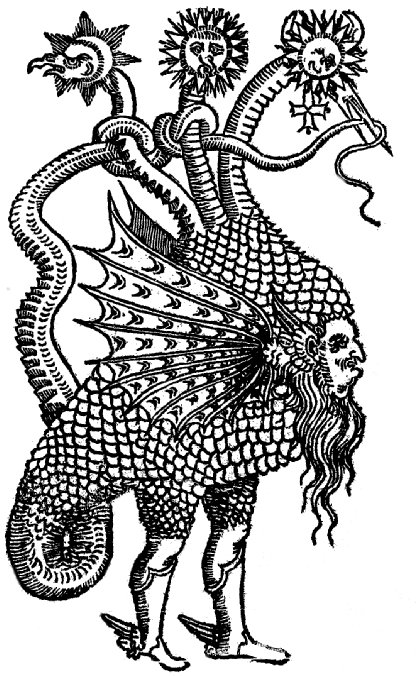
FIGURE I
(Typhon - le Mercure des Philosophes, Della transmutatione metallica,
Giovanni Battista Nazari, Brescia, 1589)qui paraît bien en avoir certains caractères, par la difformité des traits qu'elle présente. Observez notamment la Lune, prise dans son premier quartier, au bec de rapace et la TERRE, transformée en une sorte d'écrevisse monstrueuse. En tout cas, le corps couvert d'écailles rend notre verdict formel : il s'agit bien d'une version très allégée - si l'on peut dire - de Typhon, devant qui les dieux eux-mêmes se métamorphosaient aussitôt pour éviter de disparaître.
2. Isis [21].
divinité ou monstre principe alchimique rapports avec l'Olympe envisagés du point de vue de l'alchimie sections où le nom du dieu ou du monstre est particulièrement mis en lumière Isis
principe de réunion
matrice
tripartite
Lune [1er quartier]
Horus
pierre de vautour
noms d'Isis
Déméter - Proserpine
HécateLettre de Limojon
prima materia
Lapidaires Chinois
Triomphe de Limojon
Atalanta, XXII
Atalanta, XXXII, XXXVIIITABLEAU II
(Isis, du point de vue de l'alchimie)Nous ajouterons à ce tableau qu'Horus représente le Rebis, fils d'Isis et d'Osiris. Que Proserpine cache un point de cabale, par le biais de son grec Persejonh. Par persea, elle indique que la graine produit elle-même le fruit [persea désigne un arbre à fruit égyptien dont l'espèce paraît perdue et dont le fruit était produit par la graine même, parfois confondu à tort avec le pêcher]. Isis est évidemment un symbole complexe qui ne recouvre pas que la Lune. C'est une déesse tripartite qui tient à la fois du Mercure, passée le stade la ponticité, du Soufre et du principe de génération. On comprend pourquoi les hermétistes l'ont associé au vautour.
3. Dionysos [19]
divinité ou monstre principe alchimique rapports avec l'Olympe envisagés du point de vue de l'alchimie sections où le nom du dieu ou du monstre est particulièrement mis en lumière Dionysos Soufre
RebisAurore
vin [au sens du Mercure]Apollon
Bacchus
Horus
rapport avec AthénaAtalanta, VI
Atalanta, XI
Atalanta, XXXIV
Atalanta, XXXV et XXXVIIITABLEAU III
(Dionysos, du point de vue de l'alchimie)Dionysos a une conception qui ne laisse pas d'intriguer. Il est né des amours de Zeus et de Sémélé [qui contracte des rapports avec Séléné, Artémis et Hécate]. Sémélé voulut voir son amant divin et son corps se consuma sur le champ. Zeus, avant que la combustion ait été complète, extirpa du corps embrasé de Sémélé dionysos et le logea dans sa cuisse. Il fut déguisé en fille [en fait, il apparaît comme un demi frère de Pallas - Athéna]. Il fut métamorphosé en chevreau par Zeus, pour éviter la colère d'Héra. Remarquez que le trio Bacchus [bouc] - Dionysos [chevreau] - Vénus [poisson] finit de compléter l'hiéroglyphe du Capricorne. Parvenu à l'âge adulte, Dionysos manifesta encore des signes mercuriels prononcés, puisqu'il fut à son tour frappé de démence. C'est alors qu'à son tour, il prit son bâton de pèlerin pour enseigner de par le monde comment cultiver la vigne qui permet de préparer le vin des Sages, en transformant le Soufre végétal en Eau de vie qui, par les années, se transforme en terre qui se dépose sur les vieux tonneaux de chêne. C'est cette terre foliée de tartre que l'on peut employer dans la préparation du Mercure. Ainsi, parti du soleil qui arrose la vigne de sa lumière, pendant la canicule, le rayon igné ira d'abord se concentrer dans le raisin, avant de sédimenter dans l'eau de vie, et d'être utilisé comme moyen qu'on dit occulte, pour préparer une nouvelle terre où, ramené sous forme vive, il retrouvera dans l'escarboucle des Sages sa forme première, mais transfigurée. EN TO PAN. Dionysos poursuit son périple en allant en Egypte [le limon noir du Nil, les sublimations philosophiques], en Syrie [SuroV, Syrien ; désignant des substances qui coulent ensemble au grè du Mercure, par surrew], en Phrygie [Jrugia, désignant la terre de Troie, là où l'on trouve la déesse Cybèle avec sa pierre noire, la pierre phrygienne, sorte d'ocre faite de marbre]. La terre de Troie désigne aussi le mont Œta [Oith, aujourd'hui Kumayta ou Kumaita, montagne de Thessalie ; par cabale, on peut en rapprocher le mot Chmia, qui désignait auparavant l'Egypte et qui, pour les anciens chimistes, désignaient le début de leur Art] où Hercule se brûla, consumé par la tunique de Nessus [Atalanta, XXV]. Notez encore que l'on peut rapprocher la Phrygie de l'athanor [jrugeuV, ustensile pour faire griller, le poêlon de Fulcanelli en somme] et de l'un des principaux composés du Mercure [jruganitiV, feu de broussailles ou de menu bois] confirmant ce que certains laissent entendre quand ils disent que leur dissolvant n'est autre que de la terre de bruyère ou de la terre de pipe. Assez là-dessus. Dionysos poursuit son voyage dans la terre de Troie, où Cybèle [51] va l'initier à ses mystères. Délivré de sa folie, il va jusqu'en Thrace où le roi Lycurgue [Atalanta, XXXV] l'oblige à fuir chez Thétis [la mère d'Achille, cf. Atalanta, VI et XXXV]. Peu après, Dionysos revient en vainqueur chez Lycurgue, qu'il frappe de folie parce qu'il avait osé arracher des plants de vigne puis il rend la Thrace stérile [par l'eau ignée sans doute : Thétis, divinité marine, l'une des Néréides, a des rapports avec le feu sacré, Atalanta, XXXV, note 3]. Rappelons que la Thrace désigne par jeu de mots de la pierre de Thrace, dont on disait qu'elle s'enflammait au contact de l'eau [qrakias, cf. Atalanta, I]. Pour apaiser Dionysos, les Bacchantes [que Lycurgue avait fait enchaîner ; les Bacchantes sont les satellites de Dionysos, sorte d'Erinyes à leur manière, vétues de peaux de lion, qui accuse leur inclination vers le Soufre, elles portent le thyrse, sorte de lance entourée de pampre et de lierre, qui est, au vrai, le sceptre de Bacchus] écartelèrent leur roi [dissolution du corps, démembrement analogue à celui pratiqué par Typhon sur Osiris ou par Médée sur Absyrtos]. Le même épisode va se réépter, à peu près, à Thèbes où Penthée [PenqeuV, proche de penqew, pleurer, déplorer, épithètes de la disolution, de la mise au tombeau des corps] sera mis en pièces par sa mère, Agavé [Agauh, proche de agauoV : brillant. Le sens de l'allégorie est que la noirceur - la mise au tombeau - soit vaincue afin que l'occulte devienne manifeste, c'est-à-dire que les couleurs de la queue de paon apparaissent, signe de la conjonction des principes], atteinte elle aussi de folie furieuse. Les Proétides, filles du roi Proétos, qui n'avaient pas consenti à accueillir le dieu, sombrèrent aussi dans la démence et se répandirent dans la campagne en mugissant [peut-être une allusion à une vache blanche, désignant Junon, cf. supra]. On dit que les Proétides ont aussi été atteintes de folie parce qu'elles avaient voulu se comparer, du point de vue de leur beauté, à Héra, ce qui renforce en un sens, notre dernière note entre crochets. Le roi Proétos permet de revenir à un autre roi, son frère jumeau, en la personne d'Acrisios, une vieille connaissance [faut-il rappeler qu'Acrisios est le père de Danae, que Zeus rejoint dans sa tour obtuse d'airain, sous la forme d'une pluie d'or au moment, où, chose singulière ! il pleut aussi de l'or à Rhodes...1, 2, 3, 4, 5, 6, 7, 8,]. N'oublions pas que, de surcroît, Aganippè [l'une des deux sources métalliques que cite Fulcanelli dans le Mystère des Cathédrales, avec Hippocrène : il s'agit des deux sources du Lait de Vierge de l'Azoth ; elles forment encore les deux natures métalliques rendues fluides comme de l'eau. A charge pour l'Artiste de savoir les maintenir pendant un long temps, au feu, sans qu'elles soient victimes de la fascination que Zeus a toujours exercé sur les Naïades dévêtues. Marc-Antoine Gaudin a signalé son étonnement de la manière dont se comporte une certaine terre, quand on la force au feu ; cf. Soufre-] est la mère de Danae. On peut, d'un léger trait de cabale, rapprocher Acrisios [AkrisioV] de akriV. Cela suffira à propulser nos natures métalliques au sommet des montagnes [akriV], ce qui hâtera leur conjonction. Voudrait-on avoir le cachet de certification de cette conjecture ? Nous ferions signaler qu'Acrisios se décline en akriV et en ioV. Il n'en faut pas plus pour garantir que la conjonction des violettes s'opère décidément en un lieu azuré, conformément aux assertions prophétiques de Jean d'Espagnet [1, 2,]. Mais il y a plus : Acrisios n'est autre que le grand père de Persée qui sut comment vaincre Méduse, en tirant et Pégase, et Chrysaor sur lesquels nous avons dit tant de choses. Dionysos poursuit sa route et s'embarque pour Naxos [on trouve dans cette île une substance nommée smuriV, appelée aussi naxioV, cf. Atalanta, XXX. Voyee aussi Atalanta, XXXIV pour une histoire de Bacchus]. Pendant la traversée, l'équipage, qui est composé de pirates, veut le retenir comme esclave ; alors il immobilise le bateau et le couvre de lierre [allusion à une substance astringente, liée au thyrse de Bacchus et au rémora ; cf. De Cyrano Bergerac]. Epouvantés, les marins se jettent à l'eau, où ils sont transformés en dauphin [début de la réincrudation des Soufres]. Naxos est l'une des Cyclades : c'est là que Dionysos épousera Ariane [le fil du labyrinthe], abandonnée par Thésée. On dit encore que Dionysos alla chercher sa mère, Sémélé, aux Enfers et se rendit dans l'Olympe où elle figure désormais sous la forme d'une constellation : Thyoné [quwnh]. Voilà qui clôt cette histoire résumée à grands traits, de Dionysos qu'il ne faut pas confondre avec le Bacchus latin, figure plus tournée du côté du Mercure [Atalanta, VI sur le vin des sages] alors que Dionysos a des traits qui le rapprochent du soufre, à cause du thyrse.
4. sur Adonis, voyez l'Atalanta, XLI.
5. l'histoire d'Osiris a fait l'objet d'un chapitre des Fables Egyptiennes et Grecques de Pernety. Voici ce chapitre :Osiris & Isis devenus époux, donnèrent tous leurs soins à faire le bonheur de leurs sujets. Comme ils vivaient dans une parfaite union, ils y travaillèrent de concert ; ils s’appliquèrent à polir leur peuple, à leur enseigner l’agriculture, à leur donner des lois, & à leur apprendre les arts nécessaires à la vie (Diodore de Sicile, 1.I. c. I. & Plutarque de Iside & Osiride.), ils leur apprirent entre autres l’usage des instruments & la mécanique, la fabrique des armes, la culture de la vigne & de l’olivier, les caractères de l’écriture dont Mercure, ou Hermès, ou Thaut les avait instruit. Isis bâtit, en l’honneur de ses pères Jupiter & Junon, un Temple célèbre par sa grandeur & sa magnificence. Elle en fit construire deux autres petits d’or, l’un en l’honneur de Jupiter le céleste, l’autre moindre en l’honneur de Jupiter le terrestre, ou Roi son père, que quelques-uns ont appelé Ammon. Vulcain était trop recommandable pour erre oublié : il eut aussi un Temple superbe, & chaque Dieu, continue Diodore, eut son Temple, son culte, ses Prêtres, ses sacrifices. Isis & Osiris instruisirent aussi leurs sujets de la vénération qu’ils doivent avoir pour les Dieux, & l’estime qu’ils devaient faire de ceux qui avaient inventé les arts, ou qui les avaient perfectionnés. On vit dans la Thébaïde des ouvriers en toutes sortes de métaux. Les uns forgeaient les armes pour la chasse des bêtes ; les instruments & les outils propres à la culture des terres & aux autres arts ; des Orfèvres firent des petits Temples d’or, & y placèrent des statues des Dieux, composées de même métal. Les Egyptiens prétendent même, ajoute notre Auteur, qu’Osiris honora & révéra particulièrement Hermès, comme l’inventeur de beaucoup de choses utiles à la vie. C’est Hermès, disent-ils, qui le premier a montré aux hommes la manière de coucher par écrit leurs pensées, & de mettre leurs expressions en ordre, pour qu’il en résultât un discours suivi. Il donna des noms convenables à beaucoup de choses ; il institua les cérémonies que l’on devait observer dans le culte de chaque Dieu. Il observa le cours des astres, inventa la musique, les différents exercices du corps, l’arithmétique, la médecine, l’art des métaux, la lyre à trois cordes ; il régla les trois tons de la voix, l’aigu pris de l’Eté ; le grave pris de l’Hiver, & le moyen du Printemps. Le même apprit aux Grecs la manière d’interpréter les termes, d’où ils lui donnèrent le nom d’Hermès, qui signifie interprète. Tous ceux enfin qui du temps d’Osiris firent usage des lettres sacrées, l’apprirent de Mercure.Toute cette histoire d'Osiris est marquée du sceau de l'hermétisme pour Dom Pernety. Nous n'allons pas commenter ce long passage, ce qui dépasserait de beaucoup les bornes de ces notes. Le lecteur intéressé trouvera dans ce site, s'il cherche bien, toutes les pistes et tous les indices lui permettant de réaliser une synthèse correcte.
Osiris ayant ainsi disposé tout avec sagesse, & rendu ses Etats florissants, conçut le dessein de rendre tout l’Univers participant du même bonheur. Il assembla pour cet effet une grande armée, moins pour conquérir le monde par la force des armes, que par la douceur & l’humanité, persuadé qu’en civilisant les hommes, & leur apprenant la culture des terres, l’éducation des animaux domestiques, & tant d’autres choses utiles, il lui en resterait une gloire éternelle.Avant que de partir pour son expédition, il régla tout dans son Royaume. Il en donna la régence à Isis, & laissa près d’elle Mercure pour son conseil, avec Hercule, qu’il constitua intendant des Provinces. Il partagea ensuite son Royaume en divers gouvernements. La Phénicie & les côtes maritimes échurent à Busiris ; la Lybie, l’Ethiopie, & quelques pays circonvoisins à Anthée. Il partie ensuite, & fut si heureux dans son expédition, que tous les pays où il alla se soumirent à son empire.
Osiris emmena avec lui son frère que les Grecs appellent Apollon, l’inventeur du laurier. Anubis & Macédon, fils d’Osiris, mais d’une valeur bien différente, suivirent leur père ; le premier avait un chien pour enseigne, le second un loup. Les Egyptiens prirent de là occasion de représenter l’un avec une tête de chien, l’autre avec une tête de loup ; & d’avoir beaucoup de respect & de vénération pour ces animaux. Osiris se fit aussi accompagner de Pan, en l’honneur duquel les Egyptiens bâtirent dans la suite une ville dans la Thébaïde, à laquelle ils donnèrent le nom de Chemnim, ou Taille du pain. Maron & Triptolême furent encore de la partie ; l’un pour apprendre aux peuples la culture de la vigne, l’autre, celle des grains. Osiris partit donc, & l’on a soin de faire remarquer qu’il eut une attention particulière pour l’entretien de sa chevelure, jusqu’à son retour. Il prit son chemin par l’Ethiopie, où il trouva des Satyres, dont les cheveux descendaient jusqu’à la ceinture. Comme il aimait beaucoup la musique & la danse, il mena avec lui un grand nombre de musiciens ; mais on remarquait particulièrement neuf jeunes filles sous la conduite d’Apollon, que les Grecs appelèrent les neuf Muses, & disaient qu’Apollon avait été leur maître ; d’où ils lui donnèrent le nom de musicien, & d’inventeur de la musique.
Dans ce temps-là, disent les Auteurs, le Nil à la naissance du Chien Syrius, c’est-à-dire, au commencement de la canicule, inonda la plus grande partie de l’Egypte, & celle en particulier à laquelle Prométhée présidait. Ce sage Gouverneur, outré de douleur à la vue de la désolation de son pays & de ses habitants, voulait de désespoir se donner la mort. Hercule vint heureusement au secours, & fit tant par ses conseils & ses travaux, qu’il fit rentrer le Nil dans son lit. La rapidité de ce fleuve, & la profondeur de ses eaux, lui firent donner le nom d’Aigle. Osiris était alors en Ethiopie, où voyant que le danger d’une telle inondation menaçait tout ce pays, il fit élever des digues sur les deux rives du fleuve, de manière qu’en contenant les eaux dans leur lit, ces digues laissaient néanmoins échappée autant d’eau qu’il en fallait pour féconder le terrain. Delà il traversa l’Arabie, & parvint jusqu’aux extrémités des Indes, où il bâtit plusieurs villes, à l’une desquelles il donna le nom de Nysa, en mémoire de celle où il avait été élevé, & y planta le lierre, le seul arbrisseau qu’on élève dans ces deux villes. Il parcourut beaucoup d’autres pays de l’Asie, & vint ensuite en Europe par l’Hellespont. En traversant la Thrace, il tua Lycurgue, Roi barbare, qui s’opposait à son passage, & mit le vieillard Maron à sa place. Il établit Macédon le fils Roi de Macédoine, & envoya Triprolême dans l’Attique pour y enseigner l’agriculture. Osiris laissa partout des marques de ses bienfaits, ramena les hommes, alors entièrement sauvages, aux douceurs de la société civile ; leur apprit à bâtir des villes & des bourgs, & revint enfin en Egypte par la mer Rouge, comblé de gloire, après avoir fait élever dans les lieux où il avait passé, des colonnes & d’autres monuments sur lesquels croient gravés ses exploits. Ce grand Prince quitta enfin les hommes pour aller jouir de la société des Dieux. Isis & Mercure lui en décernèrent les honneurs, & instituèrent des cérémonies mystérieuses dans le culte qu’on devait lui rendre, pour donner une grande idée du pouvoir Osiris.
Telle est l’histoire de l’expédition de ce prétendu Roi d’Egypte, suivant ce qu’en rapporte Diodore de Sicile, qui la raconte sans doute de la manière qu’on la débitait dans le pays. Le genre de la mort de ce Prince n’est pas moins intéressant ; nous en ferons mention ci-après, lorsque nous aurons fait quelques remarques sur les principales circonstances de sa vie. Il n’est pas surprenant que l’on ait supposé Osiris (Diod. loc. cit.) très religieux & plein de vénération envers Vulcain & Mercure ; il tenait de ces Dieux tout ce qu’il était. Suivant l’Auteur cité, Vulcain était Son aïeul, inventeur du feu, & le principal agent de la Nature, pendant qu’Osiris croit lui-même un feu caché. Mais de quel feu Vulcain était-il supposé l’inventeur ? Pense-t-on que ce soit celui dont Diodore parle en ces termes ? « La foudre ayant mis le feu à un arbre pendant l’hiver, la flamme se communiqua aux arbres voisins. Vulcain y accourut, & se sentant réchauffé, recréé & ranimé par la chaleur, fournit au feu de nouvelles matières combustibles, & l’ayant entretenu par ce moyen, il fit venir d’autre ; hommes pour être témoins de ce spectacle, & s’en préconisa l’inventeur. » Je ne crois pas qu’on adopte ce sentiment de Diodore. Ce feu n’est autre que celui de nos cuisines, qui était très connu même avant le Déluge. Caïn & Abel l’employèrent dans leurs sacrifices ; Tubalcain en fit usage dans les ouvrages de fer, de cuivre & autres métaux. On ne saurait dire que par Vulcain, Diodore ou les Egyptiens aient eu en vue Caïn ou Abel. Ce feu dont on attribue l’invention à Vulcain, était donc différent de celui de nos forges, quoiqu’on regarde communément Vulcain comme le Dieu des Forgerons. Ce feu, suivant les idées d’Hermès, était le feu dont les Philosophes font un si grand mystère ; ce feu dont l’invention, selon Artéphius, demande un homme adroit, ingénieux & Savant dans la Science de la Nature ; ce feu qui doit être administré géométriquement suivant le même Artéphius & d’Espagnet; clibaniquement si nous en croyons Flamel, & par poids & mesure au rapport de Raymond Lulle. On peut dire d’un tel feu qu’il a été inventé, & non de celui de nos cuisines, qui est connu de tous, & qui, selon toutes les apparences, le fut dès le commencement du monde. Le peuple d’Egypte, duquel Diodore avait sans doute emprunté ce qu’il disait de Vulcain, ne connaissait pas d’autre feu que le commun ; il ne pouvait donc parler que de celui-là. Les Prêtres, les Philosophes instruits par Hermès, connaissaient cet autre feu qui est le principal agent de l’Art Sacerdotal ou Hermétique ; mais il se donnait bien de garde de s’expliquer à son sujet, parce qu’il faisait partie du secret qui leur était confié. Vulcain était ce feu-là même personnifié par eux, & se trouvait en effet par ce moyen aïeul d’Osiris, ou du feu caché dans la pierre des Philosophes, que d’Espagnet appelle minière de feu. Pour concilier toutes les contradictions apparentes des Auteurs sur la généalogie d’Osiris, il faut se mettre devant les yeux ce qui se passe dans l’œuvre Hermétique, & les noms que les Philosophes ont donné dans tous les temps aux différons états & aux diverses couleurs principales de la matière dans le cours des opérations. Cette matière est composée d’une chose qui contient deux substances, l’une fixe & l’autre volatile, ou eau & terre. Ils ont appelé l’un mâle, l’autre femelle, de ces deux réunis naît un troisième, qui se trouve leur fils, sans différer de son père & de sa mère, qu’il renferme en lui, quant à la substance radicale. Le second œuvre est semblable au premier.
Cette matière mise dans le vase au feu Philosophique appelé Vulcain, ou inventé, dit-on, par Vulcain, se dissout, se putréfie & devient noire par l’action de ce feu. Elle est alors le Saturne des Philosophes, ou Hermétique, qui devient en conséquence fils de Vulcain, comme l’appelle Diodore. Cette couleur noire disparaît, la blanche & la rouge prennent la place successivement, la matière se fixe, & forme la pierre de feu de Basile Valentin (Char. triomph. de l’Antim.), la minière de feu de d’Espagnet, le feu caché signifié par Osiris. Voilà donc Osiris, fils de Saturne. Il n’est pas moins aisé d’expliquer le sentiment de ceux qui le font fils de Jupiter, & voici comment. Lorsque la couleur noire s’évanouit, la matière passe par la grise avant d’arriver à la blanche, & les Philosophes ont donné le nom de Jupiter à cette couleur grise. Si l’on réfléchit un peu sérieusement sur ce que je viens de dire, on ne trouvera point d’embarras ni de difficultés à concevoir comment Osiris & Isis pouvaient être frère & sœur, mari & femme, fils de Saturne, fils de Vulcain, fils de Jupiter, comment même Osiris a pu être père d’Isis, puisque Osiris étant le feu caché de la matière, c’est lui qui lui donne la forme, la consistance, & la fixité qu’elle acquière dans la Suite. En deux mors, les Egyptiens entendaient par Isis & Osiris tant la substance volatile & la substance fixe de la matière de l’œuvre, que la couleur blanche & la rouge qu’elle prend dans les opérations.Ces explications, dira quelqu’un, ne s’accordent point avec la fable, qui fait Vulcain fils de Jupiter & de Junon, & qui par conséquent ne saurait être père de Saturne. Je réponds à cela que ces contradictions ne sont qu’apparentes ; on en sera convaincu, lorsqu’on aura lu le chapitre qui regarde Vulcain en particulier, auquel je renvoie le Lecteur, pour retourner à Osiris & à son expédition.Au seul récit de cette histoire, il n’est point d’homme sensé qui ne la reconnaisse pour une fiction. Former le dessein d’aller conquérir route la terre, assembler pour cela une armée composée d’hommes & de femmes, de satyres, de musiciens, de danseuses ; se mettre en tête d’apprendre aux hommes ce qu’ils savaient déjà : cela n’est pas déjà trop bien concerté. Mais supposer qu’un Roi, avec une armée de cette espèce, ait parcouru l’Afrique, l’Asie, l’Europe jusqu’à leurs extrémités ; qu’il n’y ait même pas un endroit où il n’ait été, suivant cette inscription : Je suis le fils aîné de Saturne, sorti d’une tige illustre, & d’un sang généreux ; cousin du jour : il n’est point de lieu ou je n’aie été, & j’ai libéralement répandu mes bienfaits sur tout le genre humain (Diodore de Sicile.).Le fait n’est pas vraisemblable, & l’on ne concevrait pas comment M. l’Abbé Banier (Mytholog. T. I.) peut l’avoir raconté d’un aussi grand sang froid, si l’on ne savait pas qu’il adopte volontiers, sans beaucoup de critique, tout ce qui est favorable à son système, & même ce que rapportent des Auteurs, dont il dit en plus d’un endroit qu’il ne faut pas faire beaucoup de cas.
Il est au moins inutile de recourir à l’expédition d’Osiris pour fixer le temps où l’on a commencé à cultiver les terres dans l’Attique, & les autres pays de l’Asie & de l’Europe. Les saintes écritures, le livre le plus ancien & le plus vrai de toutes les histoires, nous apprennent que l’agriculture était connue avant le Déluge même. Sans relever le faux & le ridicule d’une telle histoire prise à la lettre, il suffit de la présenter à un homme un peu versé dans la lecture des Philosophes Hermétiques, pour qu’il décide au premier récit, qu’elle en est un symbole palpable. [...] [Histoire d'Osiris, chapitre III, F.E.G.]
6. sur Œdipe : 1, 2, 3, 4, 5, 6, c'est dans l'Atalanta XVI et XXXIX que le symbolisme est le plus développé. Il est clair au vu de l'examen des sections où le nom d'Œdipe apparaît, qu'il figure le principe Soufre.
7. sur Persée [39], voyez en recherche.
8. sur Achille [26], évoqué dans 12 emblèmes. idem
9. sur Triptolème : il renvoie au mythe de Coré-Déméter ; il s'agit de l'embryon hermétique en tant qu'incarnation divine du grain de blé. Ce n'est pas à proprement parler le grain de blé même, mais plutôt l'agent de la germination. On peut y voir les principes minéralisateurs qui sont indissociables du menstrue des alchimistes. Il propage la culture du blé, comme Bacchus, celle de la vigne. C'est dans l'Atalanta, XXXV que son symbolisme est développé, en face de celui d'Achille. Article Triptolême de Pernety dans l'Atalanta, VI. Michel Maier annonce dans l'Atalanta XXIX qu'il traitera de Triptolème dans l'emblème XXXV.
10. sur Pélops :Pélops. Fils de Tantale et de Taygette, fut servi cuit dans le repas que son père fit aux Dieux. Cérès fut la seule qui ne s'en aperçut pas; elle en détacha une épaule qu'elle mangea. Les Dieux, par pitié pour Pélops, le ressuscitèrent, et lui donnèrent une épaule d'ivoire à la place de celle que Cérès avait mangée.11. sur Hippoménès [20] : l'un des deux lions de Cybèle avec Atalante. Principe mâle de la Pierre.
12. sur Pollux : Hermès transporte Castor et Pollux à Pallène [Pallhnh], en rapport avec Athéna [Pallas - Athéna, épithète du Soufre]. Pollux est immortel et contracte des rapports avec Achille. Il figure le SEL incombustible que l'on trouve notamment à Naxos [naxioV, smuriV]. Castor, en revanche, est mortel et se dissipe au feu. Il figure le SOUFRE qui doit d'abord périr avant d'être réincrudé. [1, 2, 3, 4, 5, 6, 7, 8, 9, 10,]
13. cf. note 2.14. sur Junon [36] :
divinité ou monstre principe alchimique rapports avec l'Olympe envisagés du point de vue de l'alchimie sections où le nom du dieu ou du monstre est particulièrement mis en lumière Junon Air des Sages
queue de paon
vautour
Mercure
s'oppose à la fixationpremier Mercure
dissolution
nourrit le dissolvant
Lune
transformation
vase de l'oeuvre
femme dans l'oeuvre
préside au mariageenfante Osiris et Isis
humidité de l'oeuvre
mère de Mars
feuépouse de Jupiter
Héra
Isis
mère d'Héphaïtos
envoie Typhon contre Latone[Léto]
envoie des serpents contre Hercule
pomme de discordeMercure
Diane
vache blanche
coupe à Thétis
Minerve
protège lebateau Argos
épouse de Jupiter
mère des dieux
Arès
sororium tigillumHuginus à Barma
Mutus Liber
Atalanta, XLII
Ariadne
Atalanta, VI
Alexandre Sethon
Nouvelle Lumière chymique
Lettre de Limojon
;;
Triomphe de Limojon
Fables Eg. & Grec.
Mutus Liber
Introïtus, Vprima materia
Douze Portes
Atalanta, XXII
Atalanta, XLIITABLEAU IV
(Junon, du point de vue de l'alchimie)Pour en terminer sur Junon, voici l'article du Dictionnaire de Pernety :
Junon. Fille de Saturne et d’Ops, épousa Jupiter son propre frère jumeau. Elle fut nourrie par les Nymphes, fïlles de l’Océan. Jupiter, avant de l’épouser, la trompa sous la forme du coucou. Elle devint mère de Mars, d’Argé, d’Illithie et d’Hébé. Elle eut aussi Vulcain, mais sans avoir eu affaire à aucun homme. Elle fit toujours un fort mauvais ménage avec Jupiter, qui, à la vérité, lui fournissait sans cesse des sujets de jalousie, par la quantité de Nymphes avec lesquelles il s’amusait. Jupiter perdit un jour patience, et irrité des mauvaises façons de Junon, il la suspendit avec une chaîne d’or, et lui attacha un enclume de fer à chaque pied. Les Dieux et Déesses intercédèrent pour elle, et Jupiter se laissa fléchir. Elle fut une des trois Déesses qui disputèrent la pomme d’or; elle promettait à Pâris de grands et riches royaumes pour se la faire adjuger : ces belles propositions ne lui firent pas la même impression que les promesses de Vénus., à laquelle il l’adjugea. Elle conçut de là une haine implacable contre les Troyens, et engagea la guerre qui fit périr Pâris et la ville de Troye. Toute cette fiction se trouve expliquée dans le chapitre 5 du livre 3 des Fables Egypt. et Grecq. dévoilées.Nous avons lieu de croire que le coucou [kokku] est un trait de cabale qui voile le pépin de grenade [kokkoV] ; kokkoV désigne aussi la cochenille ou le kermès dont nous avons assez parlé ailleurs [recherche]. Le coucou est donc une indication sur le Soufre rouge. Cette allégorie peut signifier que les principes sont présents dans le vase de nature dès le début de la coction puisque Pernety écrit que Junon se métamorphose en coucou avant de l'épouser, c'est-à-dire avant de former avec lui l'AIR des Sages. Citons encore ce passage capital de Jean d'Espagnet, hermétiste de tout premier plan à qui Philalèthe doit beaucoup de son Introïtus :« Au-dessous de lui, ils ont placé Junon, épouse de Jupiter, comme maîtresse de la région inférieure du ciel, c'est-à-dire de notre air : parce que cette région est toute troublée par des vapeurs, humide, froide, et en quelque manière impure et très proche du tempérament féminin. Mais aussi parce qu'elle est soumise aux décrets des corps supérieurs, qu'elle est susceptible de leurs impressions, et nous les communique, s'insinuant dans les choses dont la nature est épaisse pour les fléchir et les assouplir aux ordres imprimés par les choses célestes, et enfin parce que le mâle et la femelle diffèrent seulement de sexe, et non pas d'espèce, ils n'ont pas voulu que l'air ou le ciel inférieur fût un élément différent du ciel supérieur en essence et en espèce, mais seulement différent quant au lieu et aux accidents. » [Philosophie Naturelle Restituée, chap. LVII]
On n' a jamais donné, depuis, de définition plus juste, plus précise, de la fonction alchimique représentée par Junon. A ce sujet, il nous semble que la meilleure image représentant Junon se situe dans le Livre d'Abraham Juif. Disons encore un
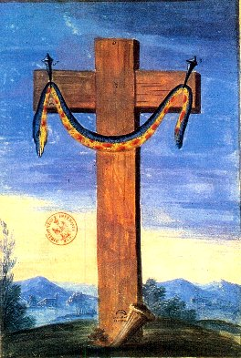
FIGURE II
(la Junon hermétique)dernier mot sur certains enfants de Junon dont nous n'avons point encore parlés. Argè [Argh] renvoie à une terre brillante [arghV] dont il faut croire que des images d'ammonites s'y trouvent. Argè explique aussi pourquoi Junon s'est précisément métamorphosée en vache blanche [argiboeioV]. Par argiloV, elle signifie par ailleurs la terre glaise ou l'argile, terre de potier dont l'absence rend aveugles les impétrants qui se précipitent sur la stibine vulgaire [l'âne-timon de Fulcanelli]. Sur Ilithye, voyez l'Atalanta, XXXVIII. Sur Hébé, voyez l'Atalanta, XLIII. Les Romains appelaient cette déesse Juventus. Elle dispensait l'éternelle jeunesse et l'immortalité en versant aux dieux de l'Olympe le nectar ou ambroisie. Elle fut remplacée dans cette fonction par Ganymède lorsqu'elle épousa Hercule. Hébé [Hbh] est le symbole de la fleur du printemps de l'oeuvre et de la flamme ardente ; c'est l'époque qui prélude à la réincrudation des Soufres. C'est la jeunesse qui porte les armes : comment ne pas y reconnaître Pallas - Athéna sortant toute armée du cerveau de Jupiter ?
15. sur Vénus [plus de 100] : voyez Aphrodite [89]. recherche. L'article qu'en donne Pernety, commenté, figure dans le commentaire de la Monade Hiéroglyphique. Vénus - Aphrodite est l'un des symboles qui recouvrent le plus d'allégories et de paraboles, chose logique puisque Vénus est promise à l'uion et qu'elle constitue, pour les uns le symbole de la partie féminine, pour les autres, la partie saline et terreuse du Mercure. Son hiéroglyphe représente un cercle, que l'on peut pointer, accolé à une croix qui désigne le creuset. Voyez aussi l'humide radical métallique [la planète] et les deux signes du Taureau [domicile diurne] et de la Balance [domicile nocturne].
16. sur Jocaste, voir l'Atalanta, XXXIX. Iokasth, femme de Laïos et mère d'Œdipe. Ce nom peut être décomposé en Io [violette] et kasth, c'est-à-dire kasteia [pureté]. D'après ce que nous avons dit d'Œdipe - cf. note 6 - il est clair que Jocaste voile le Soufre obtenu à l'état de pureté, c'est-à-dire blanchi.
17. sur Danae : elle figure le principe féminin de l'oeuvre, c'est-à-dire le SOUFRE blanc ou SEL. Enfermée dans la tour d'airain, elle est le REBIS. Pernety ne lui consacre pas d'article spécifique dans son dictionnaire. En dehors de ce que nous en avons déjà dit [1, 2, 3, 4, 5, 6, 7,8,], nous ajouterons ceci. Que Danae subit un sort qui la rapproche un peu de Latone. Elle est enfermée dans un coffre de bois avec son fils, Persée, par Acrisios [cf. supra] et abandonnée aux caprices de la mer. Le coffre finit par échouer dans l'île Sériphos où régnait Polydectès. Le tyran essaye d'obtenir les faveurs de Danae, mais Persée délivre sa mère et revient vivre à Argos. Sériphos [SerijoV] renvoie à la grenouille [serijioV] dont nous avons parlé à propos du crapaud [Atalanta, V] ou de l'ambre [Atalanta, XXXII] ou sur leur repos forcé durant l'hiver [Atalanta, XXXIII]. Enfin, en évoquant une image de l'Hôtel Lallemant [Atalanta, XXXVI]. Quant à Polydectès [Poludekth], il renvoie au royaume des morts [poludekth, épithète d'Hadès]. Il devait être pétrifié par Persée en réparation des torts commis contre Danae, lorsque Persée lui présenta la tête de Méduse.
18. sur Déïdamie : certaines légendes affirment qu'Achille l'aurait séduite et que de leur union serait né Pyrrhos, plus connu dans la guerre de Troie sous le nom de Néoptolème [Atalanta, XX]. Il n'est pas étranger à notre propos de savoir qu'un oracle avait prédit que les Achéens ne pouvaient obtenir la victoire, à Troie, qu'en présence du fils d'Achille. Il fut un de ceux qui se glissèrent dans le cheval de bois. Pyrrhos [PurroV] a été évoqué par Maier dans l'emblème VI. Pyrrhos représente une substance d'un rouge de feu dont l'équivalent hermétique ne peut être qu'un hybride entre l'aigle, le lion rouge ou le chien de Corascène. En liaison avec la section précédente où l'on présentait le vautour, c'est un autre oiseau qu'il faut évoquer ici, qui tient à la fois du rouge de feu, du corbeau [korax] et du chien du Corascène : le crave à bec rouge permet d'effectuer cette transition entre le vautour et l'aigle.
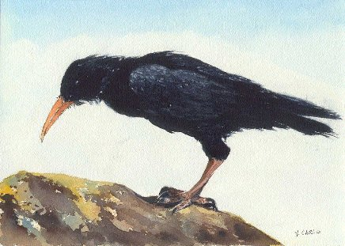
FIGURE III
(le Pyrrhus hermétique - dessin de Yvon Carlo - http://lpo29.free.fr/crave_bec_rouge.html )C'est le corbeau au bec rouge [purrokorax]. Rappelons que, dans la guerre de Troie, nous avons assimilé les Achéens aux métaux ou à leur chaux, et les Troyens au principe salin essentiel. Troie constitue l'athanor. Le cheval de bois représente l'équivalent de la tour d'airain. Pour nous aider, nous allons examiner le nom que les vieux alchimistes avaient donné au vase de nature, qu'il faut disposer dans l'athanor. Voici un extrait des Fables Egyptiennes et Grecques, qui permettra d'éclairer notre lanterne.
Noms donnés à ce vase par les Anciens.Nous voyons que Pernety assimile directement Troie au vase de nature. Mais au passage, il en oublie les confections, c'est-à-dire le cheval de Troie, que les Troyens font pénétrer, après bien des hésitations, dans Troie [Timeo Danaos et dona ferentes, etc.]. Alors même qu'ils avaient été convaincus de sa nature caverneuse [khtweV] par Laocoon que, perfidement, Apollon va faire immoler avec ses fils, par deux serpents sortis tous droit de l'océan [voyez Fontenay]. Ce fut la ruine de Troie, dont on a dit ailleurs qu'elle était obligée, vu sous l'angle de l'alchimie.
Les Philosophes faisaient en sorte de faire entrer ce vase dans leurs allégories, de manière qu’on n’eût pas le moindre soupçon sur l’idée qu’ils en avaient. Tantôt c’était une tour, tantôt un navire ; ici un coffre ; là une corbeille. Telle fut la tour de Danaé ; le coffre de Deucalion, & le tombeau d’Osiris ; la corbeille, l’outre de Bacchus & sa bouteille ; l’amphore d’or ou vase de Vulcain ; la coupe que Junon présenta à Thétis le vaisseau de Jason, le marais de Lerne, qui fut ainsi appelé de capsa, loculus ; le panier d’Erichthonius ; la cassette dans laquelle fut enfermé Tennis ; Triodite avec sa sœur Hémithée ; la chambre de Léda, les œufs d’où naquirent Castor, Pollux, Clytemnestre & Hélène ; la ville de Troye ; les cavernes des monstres ; les vases dont Vulcain fit présent à Jupiter. La cassette que Thétis donna à Achille, dans laquelle on mit les os de Patrocle, & ceux de son ami. La coupe avec laquelle Hercule passa la mer pour aller enlever les bœufs de Gérion. La caverne du mont Hélicon, qui servait de demeure aux Muses & à Phœbus ; tant d’autres choses enfin accommodées aux fables que l’on inventait au sujet du grand œuvre. Le lit où Vénus fut trouvée avec Mars la peau dans laquelle Orion fut engendré ; le clepsydre ou corne d’Amalthée, de je cache, &, eau. Les Egyptiens enfin n’entendaient autre chose par leurs puits, leurs sépulcres, leurs urnes, leurs mausolées en forme de pyramide.
Mais ce qui a trompé davantage ceux qui ont étudié la Philosophie Hermétique dans les livres, c’est que le vase de l’Art & celui de la Nature n’y sont pas communément distingués. Ils parlent tantôt de l’un, tantôt de l’autre, suivant que le sujet les amené. Sans qu’aucun en fasse la distinction. Ils font mention pour l’ordinaire d’un triple vaisseau. Flamel l’a représenté dans ses Hiéroglyphes, sous la figure d’une écritoire. « Ce vaisseau de terre, en forme d’écritoire dans une niche, est appelé, dit il, le triple vaisseau ; car dans son milieu il y a un étage, sur lequel il y a une écuelle pleine de cendres tièdes, dans lesquelles est posé l’œuf Philosophique, qui est un matras de verre, que tu vois peint en forme d’écritoire, & qui est plein de confection de l’art, c’est-à-dire, de l’écume de la mer Rouge & de la graisse du vent mercuriel. » Mais il paraît, par sa description qu’il donne de ce triple vaisseau, qu’il parle non seulement du vase, mais du fourneau. [...] [Du vase de l’Art, & de celui de la Nature]
19. Atalante : l'autre lion du char de Cybèle avec Hipoménès. Notons qu'il faut savoir soigneusement peser les poids [atalantoV] des lions avant de les ajuster au char de Cybèle, sosu peine de rater l'ouvrage. Ajoutons qu'Atalante représente l'élément mercuriel du couple, Hippoménès ayant gagné sa course contre la déesse, par ruse, en la fixant [son attention] par les pommes d'or qu'il avait jeté derrière lui, à l'instar du petit Poucet, le célèbre conte de Charles Perrault.
20. sur Hélène : nous avons vu lors de l'examen de la cheminée hermétique d'Avignon [Atalanta, XXV], qu'Hélène était née d'un oeuf, pondu par Léda qui s'était unie à Zeus, sous forme d'un cygne. Elle n'était pas seule, puisque Pollux était né du même oeuf. Ils étaient donc jumeaux. Elle fut, à cause de sa beauté, la convoitise de tous les héros. Thésée l'épousa en l'emmenant de force en Attique. Mais alors que son mari partait aux Enfers, elle fut délivrée par les Dioscures [Pollux et Castor]. Elle fut ensuite mariée à Ménélas puis enlevée par Pâris, ce qui fut la cause de la guerre de Troie. Tous les prétendants décidèrent alors de venger l'affront fait ainsi aux Grecs par les Troyens. A la mort de Pâris, elle épousa Déiphobos mais n'hésita pas, là encore, à trahir ce nouvel époux et, même, le livra à Ménélas avec qui elle se réconcilia. Après la mort de Ménélas, les légendes divergent. Pour certains, elle aurait épousé Achille, pour d'autres, elle se serait réfugiée à Rhodes. Pernety, à l'article Hélène, écrit :Hélène. Fille de Jupiter et de Léda, sœur de Castor, de Pollux et de Clytemnestre, fut la plus belle femme du monde. Ménélas l’épousa; et Pâtis, fils de Priam, ayant adjugé la pomme d’or à Vénus comme à la plus belle des Déesses, Vénus lui mit Hélène entre les mains pour récompense de ce qu’il avait porté son jugement en sa faveur. Paris enleva Hélène, et l’emmena à la cour de Priam. Ménélas, pour s’en venger, mit dans ses intérêts tous les Princes de la Grèce, et conduisit contre Priam une armée formidable qui fit le siège de Troye. Au bout de dix ans les Grecs s’emparèrent de cette ville, et Ménélas ramena Hélene avec lui. Après la mort de Ménélas les Lacédémoniens la chassèrent de leur ville : elle se retira à Rhodes chez Polixo, qui pour venger, dit Hérodote, la mort de son mari Tlépolème tué au siége de Troye, envoya dans le bain où était Hélène, deux femmes de chambre qui la pendirent à un arbre. Voyez les Fables Egypt. et Grecq. dévoilées, liv. 6. [Dictionnaire]On voit que les mythographes ne sont pas tout à fait d'accord entre eux sur le sort de la belle Hélène. Il faut dans cette histoire étudier d'abord les maris successifs d'Hélène.
a)- d'abord Thésée, dont Pernety dit ailleurs qu'il faut l'avoir pour guide, au même titre qu'Hercule. C'est dire que Thésée, à l'instar d'Hercule, est une image de l'Artiste lui-même. A preuve, cette descente aux Enfers où il faillit perdre la mémoire sur la « chaise de l'oubli » [c'est-à-dire perdre le Mercure parce que, sans doute, il avait trop pressé son feu].
b)- ensuite, Ménélas a un nom où la cabale résonne [on peut y voir par mhnh une allusion à la Lune, c'est-à-dire au Mercure ; et par laaV une allusion aux pierres, en particulier les rochers et les pierres précieuses] puisqu'il nous dit quoi faire de la pierre considérée comme première matière, c'est-à-dire comme pierre à bâtir : la transformer en un humide radical [littéralement, « mhnh-laaV », c'est-à-dire lune - pierre, ce qui pour un cabaliste équivaut à pratiquer l'opération que nous avons à l'esprit].
c)- Déiphobos : voyez ce qu'on en dit dans le commentaire du Donum Dei. deux minéraux, au moins, possèdent les attributs qu'on prête à notre héros mythologique. Pour aider l'étudiant, nous lui dirons que l'un des sels qu'on a en vue est le lien du Mercure, celui qui s'attache entre l'aigle royal et le crapaud dans l'un des emblèmes du Symbola Aureae Mensae attribué à Michel Maier.
Et que l'autre est le SEL incombustible que nous avons évoqué à chaque fois que nous parlions de la salamandre. Mais les deux sels sont également incombustibles, ce qui explique d'ailleurs que, sur les blasons ou les tableaux lapidaires, les salamandres aillent souvent par deux.
On voit que dans la fable d'Hélène, la déesse se fixe trois fois et que Pâris [Alexandre] lui sert, en quelque sorte, de moyen de sublimation, c'est-à-dire lui permet d'être volatile [on pourrait même ajouter volage]. Mais enfin, il est certain que ce n'est pas la constance qui est le propre de la belle Hélène. De fait, le vent, par son inconstance, sa vanité, ne traduit-il pas les caractères de notre Mercure volage ? Nous donnerons ici à méditer ces lignes de Salomon Trismosin :
« Il est vrai qu'elles sont telles [les Vertus de l'oeuvre] que la plupart ne les pouvant pas bien comprendre, lui refusent cette créance, comme chose impossible et hors d'une conception naturelle : de sorte que l'ignorance grossière de ces têtes légères, ne voulant reconnaître en autrui ce qui surpasse leur commune opinion, pensent tenir en bride les minutes surhumaines de ces perfections, et leur river le clou d'un si grand privilège par les arrêts de quelqu'âme incrédule, Sous le faible compas d'une vaine apparence, Si l'effet d'un bonheur, et si l'expérience ne leur montrait au doigt cette présomption, ou ne relevaient le nez d'outrecuidance à ces âmes bizarres, empoisonnées d'un scrupule volage, et d'une erreur plus que panique et profane, au grand mépris de notre magistère » [Toyson d'or]
Ce sont là paroles d'or pour le Sage qui saura les lire. Elles formeront, en tout cas, notre conclusion personnelle sur Hélène, prise comme objet hermétique. Néanmmoins, pour aider l'étudiant d'un geste secourable, nous lui conseillerons de voir le rapport, de pure connivence, entre d'une part le scrupule de conscience [c'est-à-dire de l'esprit], enqumion ; d'autre part, la seule étoile de l'oeuvre qui doit guider l'artiste vers le point fixe [anqoV monoV], et enfin l'albâtre des Sages de Fulcanelli, c'est-à-dire le véritable antimonium d'Artéphius.
21. Latone [54] ou Léto [18] est née de Kœos et de Phoibé. Kœos [KoioV] fait partie des Titans, comme Phœbé, Titanide. Il s'agit des dieux primordiaux, intermédiaires entre d'une part Ouranos et Gaïa, et d'autre part les dieux de l'Olympe. Si l'on devait donner leur mesure dans une vision de l'Univers, nous dirions que le « Big Bang » correspondrait à la mutilation d'Ouranos par Cronos [la survenue du Temps] ; n'oublions pas en effet les deux derniers vers de l'épigramme
Mais le phallus se perd au fil de l’eau marine :
Le soufre qui donna le soufre n’est plus là.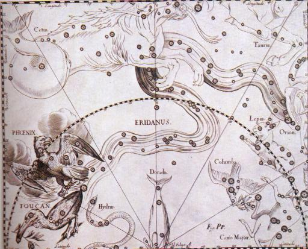
FIGURE V
(la semence d'Ouranos - l'Eridan dans l'atlas de Hevelius, Encyclopédie Atlas du Ciel, 1985)vers libres d'une grande beauté poétique [et nous dirions même pour oser ce néologisme, « poïétique »]. Ils montrent que la semence s'est répandue dans l'univers ; c'est elle que l'on voit avec l'Eridan, constellation magnifique formée de près de trois cents astres visibles, qui voisine avec le Taureau, la Baleine, Orion, le Lièvre, le Fourneau, le Phénix, le burin, l'Horloge et l'Hydre, c'est-à-dire presque tous les instruments dont doit être pourvu l'Artiste. Les Titans et les Titanides sont les quasars [proto galaxies] ; enfin, les étoiles elles-mêmes sont nos dieux mythologiques.
Pour en revenir à Kœos [KoioV], il se rapproche du palmier d'Egypte [koix] dont nous avons mesuré toute l'importance dans nos blasons alchimiques. Par extension, il conduit aux paniers, corbeilles qui ont fait l'objet de tant d'allégories où les natures métalliques ont été dissimulées et « exposées » par les dieux, selon que l'oracle consulté, après la naissance de la divinité, était ou non favorable à l'ascendance...Quant à Phœbé [Phoibè, Joibh], unie à Cœos, elle devint mère, non seulement de Léto, mais aussi d'Astéria. On voit que les deux principes de l'Art, ceux qui sont cités par Fulcanelli et par le Mutus Liber, sont présents dès l'origine : la fleur [Latone] et l'étoile [Asteria]. Notez que Délos n'est autre qu'Asteria, origine de tant d'allégories et de paraboles sur l'étoile...
22. sur Sémélé : mère de Bacchus [Dionysos]. Nous développons son sens hermétique dans l'Atalanta, XXXIV. Selon Pernety, Sémélé est Latone, si l'on tient compte, d'après notre mythographe, que Bacchus et Apollon ne font qu'un.Sémélé. Fille de Cadmus, devint mère de Bacchus, pour avoir accordé ses faveurs à Jupiter. Junon déguisée en vieille, et sous la figure de sa nourrice, lui conseilla de demander en grâce à Jupiter qu'il vînt la voir avec toute sa majesté, et de la même manière qu'il se présentait à Junon, son épouse, Jupiter y ayant consenti, vint lui rendre visite avec ses foudres et ses tonnerres. Le palais de Sémélé, et Sémélé elle-même en furent réduits en cendres. Jupiter ordonna ensuite à Mercure de tirer l'enfant de ses cendres. Voyez BACCHUS.Sémélé [Semelh] se rapproche du limaçon [semeloV] du De Lapide Philosophorum de Lambsprinck, où l'on voit deux oisillons s'essayer à voler, en haut d'un chêne où est situé leur nid.
23. sur Europe : cette déesse est fille d'Agénor et de Téléphassa. Belle comme le jour, à la peau blanche et veloutée, elle jouait un jour au bord de la mer lorsque Zeus l'aperçut. Aussitôt, coup de foudre : Zeus, pour échapper à la colère d'Héra, se métamorphose en taureau blanc, aux cornes dorées, en forme de croissant de lune. Il s'unit à elle et trois enfants consacrèrent cette union : Minos, Rhadamanthe et Sarpédon [à ne pas confondre avec le guerrier troyen qui devait être tué par Patrocle].
24. sur Léda : tout a été dit sur elle dans l'Atalanta, XXV.
25. sur Antiope : voyez 1, 2, 3, 4, 5, 6, 7, nous en faisons Léto, à cause d'Amphion et de Zéthos. C'est dans l'Atalanta, XL que nous avons pointé cette analogie.Antiope. Fille de Nyctée, et femme de Lycus, qui la répudia et la chassa pour épouser Dircé, parce qu’il apprit que Jupiter, métamorphosé en Satyre, avait joui d’Antiope. Amphion et Zéthus naquirent de ce commerce. Lorsqu’ils furent devenus grands, ils vengèrent leur mère en faisant périr Lycus et Dircé. Voyez les Fables Egypt. et Grecques, liv. 3, chap. 14, § 6.26. sur Thalie : elle a des traits qui la rapprochent de Dionysos. Thalie est représentée sous les traits d'une jeune fille enjouée, couronnée d elierre, serrant une guirlande dans la main droite et le masque grimaçant de la comédie dans la main gauche. C'est la Muse des pâtres et des bergers. elle tient parfois une houlette. On peut y voir une autre version de Circé, avec sa baguette magique [cf. Atalanta, XLII]. La Comédie n'est-elle pas de la magie ? Ne peut-elle pas fixer l'attention du spectateur, comme Orphée, les animaux sauvages, avec sa lyre ? N'est-ce pas, aussi, une indication sur la magnésie des Sages : les anciens auteurs sont pleins des merveilles de l'aimant, dont le nom, magnes, viendrait selon Nicandre, d'un nommé Magnès qui, le premier, découvrit l'aimant sur le mont Ida. Ce Magnès était, paraît-il, un berger qui, en menant paître son troupeau, fut tout à coup involontairement retenu au sol par les clous de se semelles et le fer de sa houlette [Pline, XXXVI, 16]. Nous retiendrons donc de Thalie qu'elle est plutôt orientée vers le fixe, et donc, vers le Soufre. En douterait-on ? Thalie, c'est Qaleia, dont le sens est « végétation des jeunes pousses, florissant, abondant ».
27. Orcus : divinité infernale qui s'apparente au Pluton grec. A partir de là, les deux éléments de la Piere sont liés et nous affaire au Rebis. Notez que Ploutos n'a pas les caractères infernaux que lui prêtent les Romains. On peut en rapprocher orkoV [serment, proprement : ce qui enferme ou contraint ; c'est le cas, au figuré, puisque les composants de la pierre sont dits enfermés dans une tour d'airain ou dans un oeuf]. OrkoV était le dieu protecteur des serments.
28. Pyrrhus, cf. note 18.
29. Apollon : le soleil. C'est le Soufre rouge, l'un des trois principes sans lequel rien ne serait possible. Pourtant, il n'intervient qu'en quantité infime : il est en effet dans un état de division extrême et est projeté en masse dans le corps de la Pierre. L'hiéroglyphe du soleil ayant été largement analysé dans l'humide radical métallique, on s'attachera ici à son signe zodiacal, le Lion. Dans cette partie de l'oeuvre, d'ailleurs, il s'agit du Lion rouge. Les autres dieux masculins vus avant la note 12 sont du côté du Lion vert, avant d'être passés sous les fourches caudines du crabe, c'est-à-dire sous le sororium tigillum [cf. Atalanta, XLII]. Ou si l'on préfère, avant que d'avoir reçu l'empreinte de la croix qui en scelle leur forme.
Le lion est un signe diurne, domicile du soleil, lieu d'exil de Saturne. Il désigne les terres brûlantes, les champs phlégréens [jlegra : la demeure des Géants. Voyez l'emblème XXXVII], les vents du sud [1, 2, 3, 4,]. Il marque les choses fixes et attractives. Il désigne les palais dont l'entrée est sévèrement gardée par des dragons.
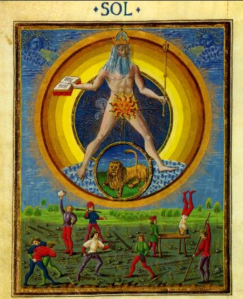
FIGURE VI
(tavole e particolari, Bibliothèque Estense, Université de Modène, Italie)C'est dans ce signe que l'on peut, nous semble-t-il, trouver l'origine tant recherchée, de la signifiance ésotérique de « Fulcanelli ». Deux hypothèses, au stade actuel de nos recherches sont possibles. Les deux dernières syllabes [nelli] ne posent pas de probléme. Elles se rapportent au nom grec du Nil [NeiloV, en latin Nilus], quasi-homonyme de neilioV qui désigne une pierre précieuse. Nul rapport donc, avec HelioV [le soleil vulgaire] comme on a voulu le faire croire. Pourtant, les alchimistes nous ont habitué au fait que ce n'était pas dans le soleil [l'or] vulgaire mais dans le soleil philosophique [qui associe le FEU du Soufre à l'EAU de l'Aigle royal, dans les sublimations]. Ce sont les deux premières syllabes qui posent problème [Fulca]. Nous proposons deux solutions. Elles sont basées sur des permutations qui paraissent aller dans le sens de la cabale bien guidée. 1ère solution : Julakh qui désigne « l'action de monter la garde, de veiller sur ». 2ème solution : jekla, qui désigne de la lie de vin brûlée [latin fæcula]. Si nous rapprochons les deux demi-moitiés, nous avons soit Jul(k)ahneiloV, soit jel(k)aneiloV. Bien sûr, il ne s'agit là encore que de conjectures et nous laissons au lecteur le choix entre cette hypothèse [qui tire entièrement le nom de l'Adepte du grec, avec d'un côté le Nil et de l'autre côté du tartre brûlé par du vitriol : l'arcanum duplicatum] et d'autres hypothèses défendues sur d'autres sites [voir liens et partenaires]. Mais revenons au Lion. Dans un des passages du poème astronomique intitulé Les Phénomènes, qui représente une encyclopédie des connaissances de son temps en astronomie et en météorologie, Aratos de Soles [c. 315 - c. 240 av. J.-C.] exprime la conviction de ses contemporains à propos des effets météorologiques dus, selon eux, à l'association du Soleil avec la constellation dédiée au lion de Némée, tué par Hercule. Malgré le décalage actuel entre le zodiaque sidéral [celui des astronomes] et tropical [celui que les astrologues conservent à bon droit, ce en quoi ils furent précédés par les hermétistes], le souvenir de l'époque caniculaire nous est parvenu intact et en Italie, on parle encore de solleone [Soleil-Lion]. Les crues du Nil [les Aigles de Philalèthe] étaient annoncées par l'entrée du Soleil dans la constellation. Actuellement, c'est en mars et en avril [qui correspondent selon le zodiaque tropical au mois du Bélier et du Taureau qui marquent, par tradition, le début de l'époque propice au travail] que culmine le Lion. Il apparaît en figures typiques, marquées par une grande faux dont la poignée se signale par l'éclatante Regulus [a Leonis], tout un programme pour les alchimistes ! Ils y voient encore le signe étoilé du régule [par cabale, RegouloV] d'antimoine, alors qu'il faut y deviner la regula, c'est-à-dire la règle ou si l'on préfère, la constance qui doit marquer cette période dan sla conduite du feu. D'une coction réglée dépend, en effet, la teinture [rhgoV, l'étoffe teinte en parlant de la toyson d'or où la projection du soufre s'opère en masse]. Pour en revenir un instant à Regulus [le petit roi de l'oeuvre, BasileuV], elle fait partie des étoiles qui, en 127 av J.-C., permirent à Hipparque, en mesurant leur position, d'en déduire la précession des équinoxes. Elle a été utilisée également pour l'établissement des calendriers chaldéen et babylonien. C'est l'étoile de la constellation du Lion parfois appelée « cor leonis » le cœur du lion. Elle doit son nom Régulus à Copernic qui lui-même s'est inspiré du nom Rex [le roi] donné par Ptolémée. Le roi des astronomes lui donna, chose singulière ! le nom curieux de « Gouverneur des affaires célestes » [on remarquera que Regulus se projette presque sur l'écliptique, à l'instar d'Asellus Australis pour le Cancer]. On ne sait pourquoi copernic lui donna ce nom, mais il est possible que ce soit parce qu'en astrologie, cet astre, l'un des plus visibles du ciel boréal, présidait aux songes des hommes et réglait les destinées [si l'on peut douter de son activité sur le monde sublunaire, en revanche, cette assertion s'inscrit de façon claire, du point de vue de l'hermétisme]. En outre, sa position dans le firmament coïncide chaque année au zénith du Soleil et confère à cette étoile une sorte de suprématie sur toutes les autres. Les Hébreux y voyaient le souvenir du lion de Judée et y liaient le symbole national de l'étoile de David [le sceau de Salomon des alchimistes, l'EAU et le FEU tête-bêche, une ligne réalisant la séparation des eaux, ce qui permet d'y lire aussi une TERRE et un AIR]. Les Romains reprirent la définition royale et en firent la Basilica Stella. Les Chrétiens y virent un des lions de la fosse de Daniel [il figure le SEL incombustible, puisqu'il fut léché seulement - c'est-à-dire purifié - par le lion qui devait le dévorer]. Quand on sait que le SEL représente le CORPS de la Pierre, il est remarquable de lire que beaucoup d'œuvres d'art chrétiennes y voient la tentation du péché [cf. infra]. Les Byzantins reprirent l'expression de Basilica stella et en firent le Basiliscos [BasiliscoV : petit roi, reptile au sens de basilic] et en vinrent à modifier son sens premier, nettement orienté vers le FIXE pour en faire un objet doué d'une certaine viscosité. Nous avons noté la proximité de Regulus par rapport à l'écliptique : ses occultations par la Lune sont fréquentes, ce qui marque la relative facilité par laquelle on peut obtenir un Mercure. En revanche, les occultations planétaires sont très rares. Cela ne saurait nous étonner : peu d'Artistes sont parvenus, en effet, à préparer le Soufre rouge, en sorte d'animer leur Mercure [comprenez, de réussir la conjonction des principes ; or une conjonction parfaite, c'est aussi une occultation où l'on peut deviner une disparition et partant, une dissolution]. Les grands alchimistes, ceux qui ont préparé la Pierre, ont vu alors s'allumer les feux du 13 novembre [Léonides] lorsque le Soleil est dans le signe du Scorpion. Ces feux constituent un essaim météoritique par lesquelles se signalent les abeilles d'Aristée [Atalanta, XLII]. Par une nuit sans lune, c'est-à-dire lorsque la dissolution a disparu, on peut en comptet jusqu'à 70 à 80 par heure. Notez que ces Léonides sont particluièrement spectaculaires au retour de la comète qui leur a donné naissance ; ce retour s'effectue tous les 33 ans, durée que les alchimistes donnent généralement pour réussir le grand magistère [à comprendre, précisons-le tout de suite, avec un grain de sel...Nul ne pourrait résister à 33 ans passés en permanence devant son fourneau]. Les très rares artistes qui ont vu ce spectacle divin ont rapportés une sorte d'embrasement de la surgface du composé, sous forme de sphères de feu, en si grand nombre qu'elles apparaissaient en forme de cristaux de neige, en sorte que le tout le ciel chymique sembla bientôt embrasé.
- le premier décan représente l'anaimal fabuleux dont triompha Héraklès dans le vallon de Némée. Alors qu'à l'horizon le soleil flamboyant rougeoie, la noble et altière tête du roi des animaux [et du plus haut arcane de l'oeuvre], frémissante de vie, d'orgueilleuse beauté et d'idéale vigueur, émerge seule, majestueuse et indomptable. Ce décan annnonce toute la puissance contenue dans le vase de nature de l'alchimiste et l'annonce d'une nécessaire tempérance dans la conduite des affaires, si l'Artiste veut aller plus loin.
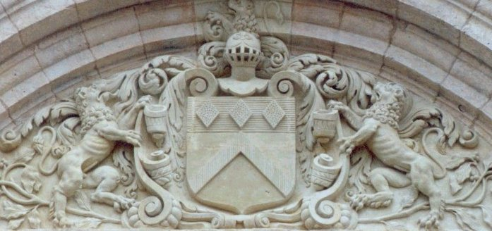
FIGURE VII
(Hôtel Lallemant, façade interne - cliquez sur l'image pour une vue de la façade interne de l'hôtel
- clichés Alain Mauranne)La figure VII montre les deux lions de l'oeuvre au travail. Ils encadrent un blason qui se rapproche de celui que nous avons examiné dans l'emblème XLII [figure III, château de la Court d'Aron]. On y retrouve le signe du FEU [L, formant l'initiale de la lumière] et les trois pierres de l'emblème XXXVI qui expriment la sublimation, qu'on appelle aussi les Aigles de Philalèthe [les crues du Nil]. A cela, ajoutons le casque, qui symbolise la dissolution [c'est un symbole d'invulnérabilité], le chapeau phrygien d'Hadès qui protège les Soufres en les rendant invisibles par l'élévation spirituelle et par l'union [1, 2, 3, 4,], but de toute sublimation chez les alchimistes. Ils forment comme le sceau d'Apollon [HelioV] et, à son image, sont chargés de ses qualités et de ses défauts. Apollon a été reconnu au plan chronologique d'une façon qui est absolument conforme aux époques de l'oeuvre : il apparaît dans l'Iliade comme le dieu à l'arc d'argent et il brille comme la lune. Ce n'est que plus tard qu'il sera reconnu comme le dieu solaire, dont les flèches seront comparés aux rayons de l'astre. Il se révèle, comme le montre le premier décan, sous le signe de la violence et d'un fol orgueil. Voilà qui définit le premier état du Mercure et son hiéroglyphe, le Lion vert. Façonné par le feu et l'air, sa figure ira en se transformant, synthétisant en lui nombre d'oppositions, et parviendra à un idéal de sagesse, qui définit le miracle grec : le lion rouge. Sous cette forme sublimée, il réalise l'équilibre des parties, en intégrant des aspects de la Justice et de l'harmonie dégagée de la lyre d'Orphée, dont les cordes se sont autres que des rayons ignés polarisés, par réflexion de la lumière de la lune. Dans ce second aspect, Apollon n'aura de cesse d'orienter les assauts des sublimations [les crues du Nil] vers une spiritualisation progressive, grâce au développement de l'âme dans l'esprit : c'est nommer la conscience. Dès lors, la matière animée [comprenez le Compost] retrouvera la mémoire de son origine basse et fangeuse ; l'Artiste devra alors lui imprimer le remords [yukh, l'âme] nécessaire et ne cesser de la tourmenter [c'est-à-dire d'imprimer en son esprit l'idée fixe du besoin charnel] en sorte qu'elle éprouve, par scrupule [cf. supra], un poids sur son coeur qui formera le prélude à la confession nécessaire [c'est-à-dire qu'elle ouvre son coeur - apojainw : mettre au jour, faire surgir la lumière ou rendre l'occulte manifeste - comprenez la réincrudation]. Apollon prend aussi des traits protéiformes qui rendent compte des nombreux changements qui interviennent dans l'oeuf philosophal : Apollon apparaît ainsi comme un dieu-rat primitif des cultes agraires [Néoptolème], un guerrier vindicatif [Arès, Ajax, Achille], un maître des fauves [l'évangéliste saint Marc], un berger secourable qui protège les troupeaux et les moissons [sous sa forme dorienne Apellon, cf. Gardes du corps] ; un biaifaiteur des hommes qui les purifie [c'est la flèche du Sagittaire]. Il engendre Esculape dont nous parlerons bientôt. Sept est son nombre, comme celui des planètes connues dans l'Antiquité [jusqu'à Herschel qui découvrit Uranus] et celui des métaux. Au total, Apollon apparaît dans le magistère comme le moyen d'une conquête, celle de l'évolution des principes conjugués de la passion [âme] et de la raison [esprit] sur le Rebis.
- le deuxième décan : l'image représente le grand chien céleste, fidèle et sinueux dans sa marche, l'oeil et l'oreille aux aguets, le nez au vent, fureteur, prêt aux saalcités de sa race, tenace dans ses désirs et violent dans ses appétits ; il est dévoué, jaloux et féroce. Ce décan peut être funeste à l'Artiste, car il est prédispose aux bavardages et aux propos incohérents. En revanche, il peut être gage de richesse matérielle ; le guide, ici, doit être le coeur ou l'instinct. La constellation du Grand Chien est logée dans un carré presque parfait, surmonté par la Licorne au nord [Soufre rouge prêt à être réincrudé], cotoyant la Colombe au sud et le Lièvre à l'ouest. L'astre dominant est bien sûr Sirius [1, 2, 3, 4, 5, 6, 7, 8, 9,] qui tenait un rôle si important chez les Egyptiens. Que dire du chien que nous n'avons déjà écrit dans ces pages ? Rappelons qu'un certain nombre de mythologies l'ont associé à la mort, aux Enfers et aux divinités relevant de la terre et de la lune. C'est un symbole complexe, bien mis en valeur par Fulcanelli et son disciple. Il semble lié à trois groupes : la terre, l'eau et la lune. Le chien aidera l'Artiste à se guider dans les ténèbres de la mort, pendant la dissolution qui s'exerce encore au premier décan du Lion. Il assure ainsi la transition entre l'eau et la lune, par l'intermède de la Lune. On le voit lié à Hécate, Hermès ; il prête son visage à ceux qui guident les âmes. Certains chiens hybrides comme les Cynocéphales ont pour mission de détruire les ennemis de la lumière [le Mercure en son premier état]. En somme, le chien semble pourvu du don de « sentir le bon feu » et permet à son maître de ne se pas se perdre dans certains carrefours, qui affectent évidemment la forme d'un X. Tel est le cas au début du Deuxième Jour des Noces Chymiques de Christian Rosencreutz où le héros se voit désigner quatre voies, dont l'une semble impraticable, car étant de feu. Nul doute que l'aide d'un chien l'aurait aidé à employer cette voie, réservée aux plus grands Artistes. Voici ce passage :
Etranger, salut : Peut-être as-tu entendu parier des Noces du Roi, dans ce cas, pèse exactement ces paroles: Par nous, le Fiancé t’offre le choix de quatre routes, par toutes lesquelles tu pourras parvenir au Palais du Roi, à condition de ne pas t’écarter de sa voie. La première est courte, mais dangereuse, elle passe à travers divers écueils que tu ne pourras éviter qu’à grand peine ; l’autre, plus longue, les contourne, elle est plane et facile si à l’aide de l’aimant tu ne te laisse détourner, ni à droite, ni à gauche. La troisième est en vérité la voie royale, divers plaisirs et spectacles de notre Roi te rendent cette voie agréable. Mais à peine un sur mille peut arriver au but par celle-là. Par la quatrième, aucun homme ne peut parvenir au Palais du Roi, elle est rendue impossible car elle consume et ne peut convenir qu’aux corps incorruptibles. Choisis donc parmi ces trois voies celle que tu veux, et suis la avec constance. Sa6he aussi que quelle que soit celle que tu as choisie, en vertu d’un Destin immuable, tu ne peux abandonner ta résolution, et revenir en arrière sans le plus grand danger pour ta vie. [Noces Chymiques, Deuxième Jour]Voilà le lieu du calvaire de l'alchimiste, là où l'Artiste a besoin d'un conducteur d'âmes, d'un aimant, rôle joué par le chien. Le carrefour offre la signification d'un lieu de passage d'un monde à un autre, que l'on peut prendre dans des sens très différents, selon le motif cruciforme de l'entrecroisement. La déesse Hécate présidait aux carrefours ; d'abord considérée comme dispensatrice de richesse, elle devint peu à peu maléfique : en fait, elle traduit l'état d'esprit de l'alchimiste, et, au vrai, de la matière qui est disposée dans l'athanor. Au début, plein d'entrain, voilà notre Artiste qui commence à chauffer son vaisseau...Plus tard, bien plus tard, nous le voyons en lutte à des problèmes insurmontables, ressemblant de plus en plus à Odysseus ou à Jason...L'article du Dictionnaire de Pernety nous laisse sur notre faim :Chien. Cet animal était en grande vénération chez les Egyptiens, sous le nom d’Anubis Il était chez eux le symbole du Mercure des Sages; aussi les Anciens l’avaient-ils consacré à ce Dieu ailé. Plusieurs ont donné le nom de Chien à la matiere du grand œuvre. L’un l’appelle Chien d’Arménie, l’autre dit que le Loup et le Chien se trouvent dans cette matiere; qu’ils ont une même origine, et néanmoins que le Loup vient d’Orient, et le Chien d’Occident. Rasis. L’un représente le fixe et l’autre le volatil de la matiere.De même, E. Canseliet ne nous semble pas avoir épuisé le symbolisme hermétique du chien dans son chapitre Les Deux Chiens [Deux Logis Alchimiques, Pauvert, 1979]. Il ne fait que les comparer au Mercure et au Soufre. Il ne parle pas d'Hécube [KunoV, monument de la Chienne], alors que, accablée par des malheurs de toutes sortes, ayant assisté au massacre de ses enfants, sa solitude autant que sa fermeté d'âme lui ont donné une grandeur incontestable. Il a oublié de dire qu'Artémis était entourée d'une meute de chiens et qu'on l'a surnommait la « tueuse de lièvres ». Enfin, il aurait pu manifester le crépuscule qu'on observe à cette époque de l'oeuvre, c'est-à-dire à la tombée de la nuit, quand Vénus resplendit comme Hesperus, moment de la journée on l'on a coutume d'employer l'expression « entre chien et loup », moment où il est facile de prendre un loup pour un chien [autrement dit de commettre une erreur d'appréciation fatale dans cette canicule]. Ce point, pourtant, n'avait pas échappé aux anciens alchimistes et l'on peut voir la lutte de ces principes dans l'une des figures du De Lapide Philosophorum.
CHIEN D’ARMÉNIE est un des noms que les Philosophes Hermétiques ont donné a leur soufre, ou au sperme mâle de leur pierre.
Chienne de Corascene. Est un des noms que les Philosophes chymiques ont donné à leur mercure, ou sperme féminin de leur pierre.
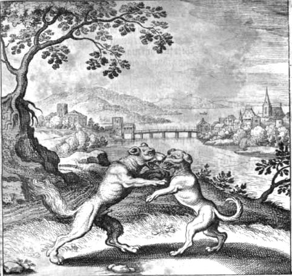
FIGURE VIII
(cinquième figure : il y a dans une seule maison un Loup et un chien -
à la fin cependant d'eux est fait un seul)C'est, en effet, sous les traits du héros pyrogène ou « pyroxène » que le chien apparaît dans nombre de traditions. Ainsi, on prétend que le chien a volé le feu dans la région où court le Nil blanc. Voyez à cet égard l'emblème XVIII où l'on voit un alchimiste et son chien. On dit aussi qu'il vole le FEU du ciel pour le donner aux hommes. Il manifeste la poursuite d'une activité des matières là où les suppose anéanties par le Mercure, définitivement dissoutes et évanouies. Son rapport avec le casque est certain, comme en témoigne la fontaine du Vert-Bois, près de Paris. Voici un extrait du passage où Fulcanelli donne son avis :
Tous ces symboles convergent, on le voit, vers un seul et même objet, également indiqué par le petit chien, posé sur la voûte de l'armet, dont le sens spécial (kpanioV, tête, sommet) marque la partie importante, en l'espèce le point culminant de l'art, la clef du Grand Œuvre. Noël, dans son Dictionnaire de la Fable, écrit que « le chien était consacré à Mercure comme au plus vigilant et au plus rusé de tous les dieux ». Suivant Pline, la chair des jeunes chiens était réputée si pure qu'on l'offrait aux dieux en sacrifice, et qu'on la servait dans les repas préparés pour eux. L'image du chien posé sur le casque protecteur de la tête constitue, au surplus, un véritable rébus encore applicable au mercure. C'est une traduction figurée du cynocéphale (kunokejaloV, qui a une tête de chien), forme mystique très vénérée des Egyptiens, qui la donnèrent à quelques divinités supérieures, et particulièrement au dieu Thot, lequel devint par la suite l'Hermès des Grecs, le Trismégiste des philosophes, le Mercure des Latins. [Demeures Philosophales, II, 50]- le troisième décan : l'image représente l'Hydre. Ce monstre ignoble, venimeux, horrible et visqueux vit dans un cloaque immonde, pestilentiel et repoussant. Ses têtes multiples et féroces sont sans cesse renaissantes. Ce décan montre les difficultés sans nombre qui assaillent l'Artiste. Difficultés qui ne seront surmontées que si notre alchimiste fait preuve d'esprit de suite et de bon sens. C'est le moment, nous disent les astrologues, de changer d'air [si l'on nous suit bien], de ne pas se laisser aller à son emportement. C'est là que l'eau étoilée doit manifester sa permanence. Le symbolisme de l'hydre de Lerne a déjà été exposé maintes fois, y compris ses rapports avec Typhon et Echidna. Aussi passerons-nous rapidement sur cet arcane. Non sans toutefois avoir rappelé qu'on peut la considérer, assez simplement comme un serpent d'eau [udra : elle possède sept têtes comme le nombre de planètes et de métaux. L'une est immortelle et c'est l'Or des Sages. C'est l'antithèse de l'arbre solaire, mais ce n'est pas l'arbre lunaire]. L'un des emblèmes de Mylius fait penser à l'hydre tout en rappelant le symbolisme de Typhon. Voyez les Douze Travaux d'Hercule. L'article de Pernety ne nous apporte guère plus de détails :HYDRE. Matiere du magistère avant la déalbation. « Notre Lion, dit Philalethe, étant mis dans notre mer, devient notre Hydre : elle mange ses têtes et sa queue. Et sa tête et sa queue sont son esprit et son âme. Cette âme et cet esprit sont sortis de la boue, dans laquelle sont deux choses contraires, l’eau et le feu. L'un vivifie I’autre, et celui-ci tue celui-là. Il faut les plonger dans notre Hydre, et puis sept fois dans notre mer, jusqu’à ce que tout soit absolument sec, c’est-à-dire, jusqu’au blanc.»Autant, la première définition convient au 3ème décan du lion, autant nous ne saurions être d'accord avec la deuxième définition de Pernety, sauf à convenir qu'il s'agit non pas de la multiplication, mais de l'accroissement de la Pierre, chose bien différente. L'Hydre femelle forme, quoi qu'il en soit, la plus grande des constellations et elle couvre ainsi près d'un tiers de la circonférence du firmament. De ce fait, l'Hydre est entourée par de très nombreuses constellations, dont trois au moins ont un intérêt direct avec l'Art : le Sextant [Sextans], le Cratère [Crater] et le Corbeau [Corvus]. L'étoile principale de la constellation est a Hydrae, dénommée Alphard, ce qui signifie « la solitaire ». Les Arabes avaient pour sûr, en vue, notre « seule étoile » [anqoV monoV], d'un rouge ardent. La figure IX nous montre cette magnifique constellation qui supporte le Corbeau et le Cratère : elle annonce par là le but que doit poursuivre l'alchimiste dans le déroulement de la Coction. Ce cratère n'est autre que cette coupe, vase sacré, ou urne funéraire [arcula, arca] que constitue le vase de nature dont, le temps venu, l'Artiste devra retirer les cendres selon un tour de main qui est un secrets les plus réservés de l'oeuvre.
Hydre. Serpent à plusieurs têtes qu’Hercule tua dans le marais de Lerna. Les Philosophes Spagyriques disent que l’Hydre représente la semence métallique, laquelle si l’on digère, et si l’on cuit dans le vase philosophique, s’altère et se change de maniere qu’elle subit une espèce de mort, et semble acquérir à chaque instant un nouveau genre de vie par les différents degrés de perfection qu’elle prend, de même que l’Hydre prenait dix nouvelles têtes quand Hercule lui en coupait une; ce qui est très clairement le symbole de la multiplication de la pierre. Car autant de fois que l’on recuit et que l’on dissout la pierre avec du nouveau mercure, elle acquiert le décuple de vertu, et a dix fois autant de force transmutatoire qu’elle en avait avant cette nouvelle décoction. Voyez les Fables Egypt. et Grecq. dévoilées, Liv. 5, chap. 4.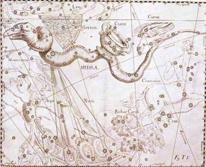
FIGURE IX
(l'Hydre, atlas de Hevelius)- l'Hydre n'est guère éloignée du vaisseau Argos, de la Licorne et du Centaure. L'aimant que signale Christian Rosencreutz dans sa Deuxième Journée des Noces Chymiques est disposé en forme de sextant ; l'objet de salut servira à l'alchimiste pour faire le point [le point de croix, s'entend]. Nous n'insisterons pas sur le Corbeau mais remarquerons encore, au passage, l'extraordinaire concordance entre les figures astrales et le grand oeuvre alchimique, remarquée ailleurs. Ainsi, l'étoile la plus brillante du Cratère se nomme Alkes [par cabale, alkh : force agissante où l'on retrouve l'autorité du Lion rouge, avec une idée d'aide ou de secours où l'on retrouve notre chien - Alkh, nom de chienne] : si nous faisons du Cratère notre vase de nature, le ciel nous indique de façon quasi explicite qu'il faut y cuire notre AlKali [que l'on doit lire AlKlié puisque en majuscules grecques, Alkh s'écrit ALKH. D'où, s'ensuivant que A exprime le Soufre et L le feu élémentaire, le vocable AL définit le Rebis, K signifiant kalia pour prison - le vase de nature, appelé aussi la prison du poulet - et H exprimant la liaison des principes où l'on doit voir dans les deux I I les Soufres, à en croire Fulcanelli [toute ligne verticale correspond au Soufre sublimé]. Notez encore que le poulet [orniqeioV] est littéralement « l'oiseau de Dieu » [de orniV, oiseau et qeioV, Dieu]. Voilà qui nous permet de rajouter des notes sur ce volatil [cf. Atalanta XLII]. Les alchimistes ont donné à cet oiseau un surnom, celui d'Hermogène. La Tourbe en parle ainsi :
« Sachez que notre matière est un oeuf ; la coque c'est le vaisseau, et il y a dedans blanc et rouge ; laissez-le couver à sa mère sept semaines ou neuf jours ou trois jours, ou une ou deux fois, ou le sublimez , lequel que vous voudrez, deux cent quatre-vingts jours, et il s'y fera un poulet ayant la tête rouge, les plumes blanches et les pieds noirs...»
La version de la Tourbe dont nous disposons est de la main de W. Salomn [la Bibliothèque des philosophes chimiques, Paris, 1672 et 1678] qui ne s'est pas gêné pour interpréter, couper ce qui l'embarassait et ajouter ce qu'il croyait manquant afin de mettre le vieux texte latin en harmonie avec la pensée alchimique du XVIIe siècle. Nicolas Flamel, dans ses Figures Hiéroglyphiques a aussi nommé l'oiseau de Dieu d'une manière, il est vrai, assez alambiquée :
« Les Envieux l'on appelé Athanor, Crible, Fumier, Bain-Marie, Fournaise, Sphère, Lion verd, Prison, Sépulcre, Urinal, Phiole, Cucurbite, moi-même en mon Sommaire Philosophique, que j'ai composé il y a quatre ans deux mois, je le nomme sur la fin, la Maison et Habitacle du Poulet, et j'appelle les Cendres de l'Ecuelle la paille du Poulet. »
Cette cendre est la solution du problème, en même temps qu'elle représente le résultat de la dissolution radicale de la matière. On a déjà été amené à établir un parallèle entre le « bouton de retour » d'E. Canseliet et « le retour des Cendres » du poêlon de Fulcanelli [cf. le trait d'humour, dans les Demeures Philosophales, I, p. 154, où l'Adepte - mais est-ce le même que celui qui a rédigé le Mystère des Cathédrales ? Où doit-on voir dans la trilogie fulcanélienne un ouvrage mosaïque ?]. La paille renvoie à de la chaume [stramentum] et donne pratiquement le nom du lien du Mercure. Dans le Chemin des Chemins, attribué à Arnauld de Villeneuve, il est écrit que :
« Vous trouverez au fond une terre calcinée, c'est-à-dire une force ignée, c'est-à-dire de nature ignée. Tu auras donc les quatre éléments, la terre, le feu et cette terre calcinée qui est la poudre dont parle Morien : " Ne méprise pas la poudre qui est au fond parce qu'elle est dans un lieu bas. C'est la terre du corps, c'est ton sperme et en elle est le couronnement de I'Oeuvre. "».
On ne saurait être plus précis. Ayant pu consulter et annoter les Entretiens de Morien à Calid, nous engageons le lecteur à y lire Morien dans le texte. Revenons à l'oiseau de dieu : il ne peut en y avoir que trois. Le coq, l'aigle et un curieux volatil dont le nom vulgaire est le Rebet ou troglodytes [Trwglodutai, habitant des cavernes. N'est-ce pas là notre véritable oiseau divin ? Celui qui s'accomode des gnomes et des ghurs vitrioliques ? Nous laisserons au lecteur le soin de juger de ce point de science], que l'on nomme aussi l'oiseau de Dieu, est très respecté, parce qu'il a apporté, dit-on, le feu du ciel, et l'on est convaincu qu'il arriverait quelque malheur à celui qui le tuerait. Enfin, pour terminer sur l'étoile Alkes du Cratère, nous évoquerons Hermogène à qui appartient ce fameux poulet : la paille du poulet d'Hermogène n'est rien d'autre, en somme que la cendre de l'oiseau divin qui fait du nid son Mercure.
- le Corbeau est l'autre nom que l'on donne au laiton, à l'Airain, bref à l'amalgame philosophique. Nous avons vu supra un exmeple type du corbeau hermétique. Les Latins dédièrent cette constellation à Apollon, parce qu'il désaltéra le dieu de la lumière. C'est donc l'oiseau du Soleil, ce que l'on aurait tendance à oublier ; mais la proximité de Leo et de Corvus dans le ciel permet de rappeler à la mémoire ce fait, a priori étrange, les alchimistes ne cessant de parler de tête de corbeau quand ils veulent signifier leur putréfaction. Peur-être tient-on ici l'explication de cette parabole obscure de Philalèthe :« [...] à peine le Mercure a-t-il terminé son règne qu'entre son successeur Saturne, qui occupe le plus haut rang après lui. Le lion mourant, naît le corbeau. » [Introïtus, XXV]
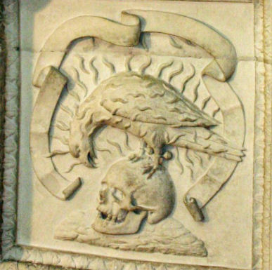
FIGURE X
(Hôtel Lallemant - chapelle - détail de caisson - cliché Alain Mauranne)Dans l'Atalanta, XXVIII, nous avons posé la question du rapport entre ce noir corbeau et ce Soufre rouge, associé au lion de la même couleur. Qui irait penser que sous ce noir corbeau se cache un chien fidèle et que sous ce crâne si expressif ce soit le Soufre qui soit voilé en un chef casqué ? Pour une étude spécifique du corbeau, voyez le Donum Dei. Sur les oiseaux de l'oeuvre, voyez l'Atalanta, VIII. Un dernier mot : le corbeau, à l'instar du chien, apparaît comme le messager des dieux en empruntant des traits au vautour et on lui prête les traits d'un guide et d'esprit protecteur. Il serait, pour certains, un symbole de solitude [cf. supra sur a du Cygne], de celle prise comme isolement volontaire se situant à un plan supérieur, c'est-à-dire de la sublimation. En ce sens, le corbeau se présente comme un gage d'espérance, le corbeau répétant toujours, selon le mot de Suétone, le vocable : cras ! cras ! c'est-à-dire « demain, demain ». [ce vocable cras ! permet de signaler un trait de cabale entre kraV, sommet d'une montagne, là où a lieu la conjonction des soufres, et krasiV, action de mélanger deux substances ou alliage d'un métal, que les alchimises appellent leur Electre].
- le Sextant est intéressant non seulement parce que nous avons dit qu'il constituait pour ainsi dire l'aimant, le chien fidèle que l'alchimiste doit prendre pour guide, celui qui l'aidera à broder son point de croix ; mais encore en raison de la raison qui fit donner ce nom à la constellation.Le nom de la constellation du Sextant est le fruit de l'imagination de Hevelius, infatigable dessinateur des cieux, qui, précisément avec un sextant, avait pu mener à bien, à partir de son observatoire de Danzig, la lourde tâche qui consiste à relever lespositions des étoiles visibles « Ce n'est pas que la disposition des étoiles fasse penser a cet instrument » confesse Hevelius en faisant allusion a cette constellation, « ni qu'il y soit bien disposé ; mais il m'a servi entre 1658 et 1679 a établir la position des étoiles. La bêtise humaine me la maintenant détruit en même temps que mon observatoire et tout ce que je possédais, dans les flammes d'un horrible incendie, l'ai donc décidé de le rappeler dans le ciel afin d'honorer Uranie ». C'est donc à la suite d'une circonstance fortuite que le sextant trouva place au firmament, bien que selon certaines interprétations ce nom rappelle en réalité l'instrument utilisé au XVIe siècle par Tycho Brahe dans son grand observatoire d Uraniborg (la ville d'Uranie, au Danemark mais c'est plutôt à l'autre appellation (Uranie) historiquement attribuée a la constellation du Sextant que cette interprétation fait allusion II nous faut rappeler que, quelques années avant Hevelius. en 1643, une autre appellation fut proposée, mais sans un grand succès, par le capucin Antonio de Rheita ce dernier, ayant construit lui-même une lunette avait prétendu découvrir dans cette zone celeste une répartition d'étoiles reproduisant le visage de Jésus-Christ, et, selon les vœux de ce religieux, cette constellation aurait dû s'appeler le Suaire du Christ, c'est-à-dire le Voile de Véronique...[Encyclopédie Atlas du Ciel, 1985]Ainsi s'achève nos supputations sur l'Apollon céleste et hermétique.
30. sur Esculape : il était vénéré sous le nom d'Asclépios. Comme Dionysos, il fut tiré du corps enflammé de sa mère, Coronis, par Apollon lui-même, qui joua le même rôle que Zeus pour Sémélé. Mais au lieu de le mettre dans sa cuisse, il en confia l'éducation au centaure Chiron, ce grand professeur dans le monde de l'Olympe. Son ardeur fut telle sous cet enseignement distingué qu'Asclépios se mit non seulement à confectionner de bons remèdes, mais que, de surcroît, il ressuscita des morts, tels Glaucos [Atalanta, XIII], Tyndare [mari de Léda et père de Castor, cf. Atalanta XXV]; et Hippolyte [cette Amazone forme la matière du IXe travail d'Hercule. L'Hippolyte ressuscité par Asclepios est le fruit des amours de Thésée et de la reine des Amazones, Antiopé. Pour des raisons complexes, Poséïdon fut conduit à perdre Hippolyte et, alors qu'un jour, son char longeait la mer, il vit sortir de l'écume blanche des flots, un monstre qui affola ses coursiers. Ce monstre sortant de la mer et cause de la mort d'Hippolyte rappelle ces serpents sortis de la mer, qui étouffèrent Laocoon et ses deux fils. Quoi qu'il en soit, on l'identifie avec le dieu Virbius. Hippolyte est, par cabale, celui qui maintient le feu ou qui, du moins, le modère, car ippolutoV signifie « délier les chevaux » avec le sens de dissoudre, par lutoV. Hadès, par peur de devoir fermer boutique, alla se plaindre à Zeus qui foudroya Asclépios. Ce dieu médecin portait le serpent, symbole mixte tenant de l'EAU et de la TERRE, puisque visqueux et changeant de peau chaque année.
31. sur Hercule, voyez Fontenay ;
32. Nous ne pouvons ici conter l'histoire d'Odysseus qui nous entraînerait trop loin. Bornons-nous à présenter ce tableau synoptique :
Episode de l'Odyssée nom de cabale sens hermétique correspondance alchmique Télémaque telhmakoV envoyé de loin - qui combat avec des armes de jet Apollon Nestor nestor [nestoriV] coupe - cratère eau permanente Protée Prwteus métamorphoses évolution des matières dans le vase de nature Calypso Kaluyw [kaluptw] couvrir, envelopper durée de la Grande coction [sept jours] Lotophages Lwtojagoi amour immodéré des fruits, du miel danger de perdre le Mercure [perte de mémoire] Hadès oeuvre au noir dissolution - fermentation Eole AioloV [aioloV] agitation, bouillonnement action du feu [plusieurs vents] Lestrygons LaistrugoneV mort des métaux sublimation des chaux Charybde et Scylla cf. Atalanta XIII rochers flottants SumplhgadeV sortie de la noirceur conjonction des Principes sirènes AcelwiV naissance du Soufre réincrudation [ne pas brûler les fleurs] Cyclopes Kuklwy [kuklwsiV] bâtisseur d'airain [sens complexe] formation du Rebis Nausicaa Nausikaa terre d'accueil Délos Boeufs du soleil Septentrion aimant menstrue des natures métalliques Circé Kirkh [kirkoV] faucon, animal dédié à Horus. méthode de fixation du Soufre Eumée EumaioV fidélité, servitude Mercure préparé Ithaque Iqakh - IliwV terre promise réincrudation Pénélope Phnelopeia [phne lopaV] trame - laisser tomber son écorce - penhV - indigent - Peau d'Âne Pierre au rouge TABLEAU V
(l'Odyssée du point de vue de l'alchimie)Ce tableau a été dressé d'après les épisodes successifs du roman de James Joyce, Ulysse [Ulysses, Paris, Shakespeare and Co, 1922] Le canevas figure dans le James Joyce de Jean Paris [Le Seuil, 1979]. Plusieurs choses sont notables :
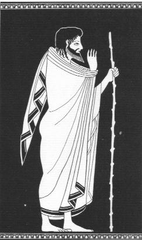
FIGURE XI
(peinture d'une hydrie ; Ulysse à Alkinoos : « c'est moi qui suis Ulysse. »,
chant IX, 19 et suiv., pinacothèque de Munich)
a)- Ulysse faillit devenir immortel pendant son séjour chez Nausicaa [rapport à l'abri, au refuge].
b)- Ulysse a un caractère mercuriel assez accusé : on le voit transformé en vieillard ou en homme dans la force de l'âge , une fois parvenu à Itaque, par la volonté d'Athéna.
c)- Lorsque Poséïdon est chez les Ethiopiens [allusion à la phase de dissolution], l'odyssée d'Ulysse ne connaît point d'avatar défavorable, signe évident que ce n'est pas la dissolution qui pose problème, mais la suite avec les régimes de température.
d)- Les prétendants à Pénélope [la Pierre] peuvent être comparés aux métaux vils dont l'un seulement sera élu. Il y a un parallèle à faire avec le héros des Noces Chymiques, dans la Ière Journée où les « prétendants » sont tirés 'une caverne avec une corde, et aussi avec la IIème Journée, lorsque riches et pauvres sont confondus lors d'un banquet. Notez d'ailleurs que ce traité de Christian Rosencreutz va au-delà de l'alchimie et qu'on y note des traits initiatiques des plus accusés qui dénotent d'une intention maçonnique évidente.
e)- au retour d'Ulysse déguisé en mendiant [le Mercure], seuls quatre le reconnaissent pour tel : le chien Argos, le bouvier Philoétios, le porcher Eumée et Télémaque. Le bouvier [JiloitioV], c'est celui qui aime les fêtes de Bacchus ou de Cybèle [jiloistroV]. Le chien [ArgoV], représente littéralement la blancheur, le brillant, en proche assonance avec la terre blanche qu'on trouve à Naxos. Le cas d'Eumaios a déjà été vu [on peut ajouter que, par cabale, Eumaios peut s'écrire Eu et maioV, qui désigne le moi de mai, c'est-à-dire le bon mois pour récolter le Soufre rouge dissous dans la rosée de mai]. Nous avons donc plusieurs principes en sommation : le chien [Soufre blanc, sel] ; le bouvier [qui tient du Mercure] ; le porcher [qui désigne l'époque où l'on récolte la rosée] et Télémaque [allusion à Apollon, celui qui combat de loin, à l'arc d'argent]. Ulysse est l'ordonnateur de ces principes. D'ailleurs son nom peut se décomposer : Ulysse, c'est OdusseuV, proche de odussomai « le faché ». Facher ou irriter, en grec, s'énonce comme orgh : « agitation intérieure de l'âme » qui définit à merveille l'état du Mercure préparé. Nous ne saurions, cependant, mettre assez en garde l'étudiant quant aux conclusions à tirer de tels rapprochements et si une chose est sûre et certaine, c'est bien que l'on ne saurait réduire en principes chimiques les mythes, fables, légendes que les Anciens nous ont légué. A nous d'en tirer la signifiance hermétique, à la fois sans insulte pour la mythologie qui a fondé notre civilisation et avec prudence, en nous contentant d'évoquer de possibles suggestions et des parallèles dont on sait qu'ils ne se rejoignent qu'à l'infini, c'est-à-dire à l'horizon de l'éternité : c'est ainsi que les kabbalistes juifs définissent, en une manière sublime, Dieu. Les physiciens modernes parlent de temps de Planck, barrière infranchissable pour le macrocosme ou d'horizon des particules pour le monde infinitésimal, ce qui en somme revient exactement au même.
33. sur Jason : voyez le petit canevas hermétique de la section chimie et alchimie. Pernety a consacré un chapitre entier des Fables Egyptiennes et Grecques au mystère de la Toison d'or. De nombreux hermétistes ont aussi écrit sur Jason et ont donné leur interprétation, du point de vue de l'alchimie, de la fable des Argonautes. Par exemple, Salomon Trismosin, dans sa Toyson d'Or, écrit que les animaux qui gardaient ce trésor [les deux dragons de Nicolas Flamel ou les deux Lions] furent endormis par Jason grâce aux conseils de Médée. Voilà un extrait des Figures Hiéroglyphiques :« Quand tu auras blanchi, tu as vaincu les Taureaux enchantés, qui jettoient feu et fumée par les narines. Hercule a nettoyé l'Etable pleine d'ordure, de pourriture et de noirceur. Jason a versé le jus sur les Dragons de Coichos, et tu as en ta puissance la Corne d'Amalthée, qui (encore qu'elle ne soit que blanche) peut combler tout le reste de ta vie, de gloire, d'honneur, et de richesse.»
On ne peut s'étendre daavntage, dans les limites de cette page, sur les beautés qui apparaissent, scellées derrière l'allégorie ou la parabole. Mais enfin, vaincre les Taureaux revient à verser le Lait de Vierge sur les Dragons qui gardent le trésor du Jardin des Hespérides [toison d'or ou pommes d'or]. On se contentera ici de renvoyer le lecteur à l'humide radical métallique ainsi qu'à l'Atalanta, XXV où nous avons approfondi davantage le sujet, sans toutefois en épuiser la puissance, toute de cabale hermétique, qui s'en dégage. Terminons en affirmant qu'à l'instar de Jason, Bacon, Paracelse et Basile Valentin cherchaient aussi l'art de guérir.
34. sur Thésée : on lit dans les Figures Hiéroglyphiques ce passage assez énigmatique :« Celui qui lave, ou plutôt ces lavements, qu'il faut continuer avec l'autre moitié, ce sont les dents de ce Serpent que le sage Opérateur, le vaillant Thésée, sèmera dans la même terre, dont naîtront des Soldats qui se détruiront enfin eux-mêmes, se laissant par opposition résoudre en la même nature de la terre, laissant emporter les conquêtes méritées. »
Thésée contracte ici des rapports étroits avec Cadmos. Tous les points de symbolisme touchant Thésée ont été abordés dans la section Fontenay, en particulier dans les Douze Travaux d'Hercule. En complément, nous ajouterons l'article de Pernety :
Thésée. Fils d'Egée et d'Ethra, eut le bonheur de se préserver du poison que Médée sa belle-mère voulut lui faire prendre. Les Athéniens, obligés par traité fait avec Minos, Roi de Crète, de lui envoyer tous les ans sept jeunes Athéniens pour combattre le Minotaure enfermé dans le labyrinthe, décidaient par le sort quels seraient les sept qu'on enverrait. Le sort tomba sur Thésée. Avant que de partir Egée lui recommanda de mettre des voiles blanches à son retour, en cas qu'il revînt victorieux, au lieu des voiles noires que l'on mettait en partant. Thésée le promit, s'embarqua, et aborda dans l'île de Crète. Il y gagna les bonnes grâces d'Ariadne, fille de Minos. Elle demanda à Dédale le moyen de sortir du labyrinthe, et il lui donna un peloton de fil, qu'elle remit à Thésée. Muni de ce peloton, Thésée entra dans le labyrinthe, combattit le Minotaure et le tua. Il avait défilé son peloton dès l'entrée, et n'eut que la peine de suivre son fil et de refaire son peloton pour en sortir. Ariadne, charmée de le revoir, consentit à partir avec lui, et Thésée l'emmena. Il l'abandonna ensuite dans l'île de Naxo. Voyez. ARIADNE . Egée voyant approcher le temps du retour du vaisseau qui avait transporté les sept Athéniens à Crète, avait été l'attendre sur le bord de la mer. Thésée avait oublié de changer ses voiles, suivant la promesse qu'il en avait faite à son père. Egée les voyant noires, crut son fils péri, et de désespoir se jeta dans la mer.Thésée réussit là ou tant d'Artistes ont échoué : entrer dans le labyrinthe, ce qui ne constitue pas en soi une grande affaire, pourvu que l'on ait les bonnes matière premières ; trouver la chambre centrale, ce qui est déjà beaucoup plus difficile ; combattre le Mercure en son premier état, incarné ici par le Minotaure. Le peloton de fil qu'Ariadne donne à Thésée n'est autre que celui de la fileuse que l'on retrouve sur la planche 14 du Mutus Liber. Ce fil d'Ariane est l'un des plus merveilleux arcanes de l'oeuvre. Il en constitue pour ainsi dire a et w. Jetez donc un coup d'oeil sur la Monade Hiéroglyphique de John Dee et vous verrez que sous ces deux lettres grecques, se cache les deux composants du feu secret. La fileuse du Mutus Liber dévide son fil exactement comme l'Artiste file son Mercure, c'est-à-dire le rend visqueux d'une manière parfaite. Fulcanelli a précisé exactement les difficultés que le héros avait à affronter : a)-accéder à la chambre centrale ; b)- avoir la possibilité d'en sortir [cf. Mercure]. Et c'était sans compter le combat avec le monstre. Qu'il s'agisse du périple de Thésée, des Travaux d'Hercule, de l'Odyssée, etc., toutes les fables de l'Antiquité, pour Pernety et pour d'autres dont Jean d'Espagnet [1, 2,], Philalèthe et probablement Isaac Newton, n'étaient que des prétextes pour parler de l'Art sacré. Contrairement à Pernety, nous ne pensons pas que Thésée cache le Mercure, mais bien plutôt le Soufre et le fil d'Ariane est à l'image de la mer hermétique sur laquelle vogue le bateau Argos ; la même encore où la pauvre Latone, sur le point d'accoucher, et poursuivie par le courroux vengeur d'Héra et tarde à trouver une terre hospitalière ; la même encore où Eole fait souffler la tempête et empêche nombre d'Achéens de revenir à leur terre d'origine ; ce qui sera à la base de l'Odyssée...Voilà une interprétation plausible du labyrinthe de Salomon, dont on trouvera une image dans la section des Gardes du corps. Thésée [QhseuV], c'est encore, par cabale, tiqhmi [qhsomai], c'est-à-dire le fondement, la pierre de touche de l'oeuvre.Thésée se proposa Hercule pour modèle, et lia une étroite amitié avec ce Héros. Il brava, comme lui, toutes sortes de dangers, et eut part à beaucoup de ses exploits. Il tua d'abord le taureau de Gère dans la plaine de Marathon, défit un sanglier furieux qui ravageait les campagnes, purgea le pays d'une infinité de voleurs et de brigands, fit la guerre aux Amazones, emmena leur Reine Hippolite, qu'il épousa, et en eut un fils du même nom; prit le parti des Lapithes contre les Centaures, et descendit enfin aux Enfers avec Pyrithoûs pour enlever Proserpine. Hercule, son ami, y étant aussi allé pour prendre Cerbère, y trouva Thésée et le ramena dans le séjour des vivants. Quelques-uns mettent Thésée au nombre des Argonautes. Les uns disent qu'il fut tué par Lycomede, d'autres qu'il mourut d'une chute.
Thésée représente le mercure des Philosophes, appelé pour cette raison le bon ami d'Hercule, symbole de l'Artiste. Toutes les expéditions qu'on lui attribue sont les effets du mercure pendant le cours des opérations requises pour la perfection de l'œuvre. Il fallait par conséquent le mettre au nombre des Argonautes, et même des principaux. Il mourut en effet par les mains de Lycomede, et perdit aussi la vie par une chute; mais dans deux circonstances différentes de l'œuvre. La première est celle de la dissolution, appelée Mort, Tombeau, Sépulcre. La seconde est celle de la fixation; parce que la volatilisation étant nommée Vie, la fixation qui marque le repos, est aussi appelée Mort. Voyez les Fables Egypt. et Grecques dévoilées, liv. 3, chap. 14, § 5 et le liv. 5, chap. 22. [Dictionnaire]
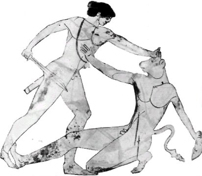
FIGURE XII
(Thésée et le Minotaure)
35. sur Pirithoüs ou Piritoos, voyez Fontenay.
36. voyez Fontenay ; 55 occurrences sur le site
37. sur Ulysse, cf. note 32 ; sur Jason, cf. note 33. La rétention de Pirithoüs est l'allégorie de la dissolution du Soufre : l'ami de Thésée est retenu par Ploutos qui refuse sa libération.
38. Le père de tous n'est pas Saturne mais Ouranos. C'est Cronos qui, en utilisant sa harph, est cause du monde. Mercure est l'agent, dans le sens de médiateur. Vulcain représente le feu élémentaire.
39. la matière de toutes ces fables a été développée dans les différents chapitres de l'Atalanta fugiens et, pour certaines d'entre ellles, dans cet emblème XLIV.
40. voir note 10. Dans ses Fables, t. I, Pernety parle de Pélops en le désignant comme la matière au noir.
41. Achille et Triptolème, cf. note 9. Cette alternance de tisons de charbons et de lait masque ce que Fulcanelli appelle successivement la fleur ou l'étoile, selon que la matière se présente à l'état de Mercure ou de Soufre. Il faut bien comprendre qu'il s'agit de la même matière, vue sous deux formes différentes.
42. Il doit s'agir de Pâris - Alexandre et Hélène.
43. Pernety prend prétexte de ces incohérences chronologiques comme preuve que les fables de l'antiquité devaient être lues sous un angle purement allégorique. En fait, Michel Maier l'avait devancé dans ses supputations. rien ne dit, pourtant, que ces fables aient le moindre rapport avec l'alchimie et nous en profitions pour rappeler que tout ce que nous avons dit dans cette section devait être pris non à la lettre, mais à l'esprit, avec un grain de sel.
44. Il s'agit là des fables où le Soleil [Soufre rouge] et la Lune [Sel] entrent en conjonction. La première phase de cette conjonction est appelée la grande éclipse par Lulle.